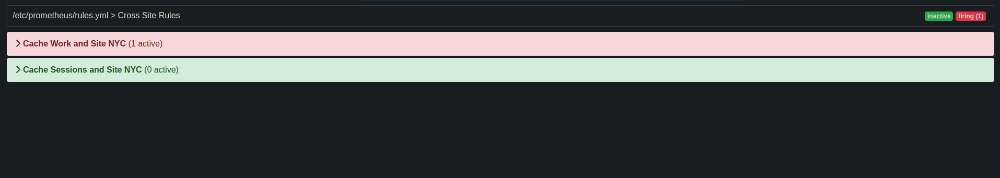

Add Infinispan libraries to your Java project and create embedded caches that store data in the same memory space where you execute application code.
1. Adding Infinispan to your Maven repository
Infinispan Java distributions are available from Maven and requires at least JDK 17.
Infinispan artifacts are available from Maven central. See the org.infinispan group for available Infinispan artifacts.
1.1. Configuring your project POM
Configure Project Object Model (POM) files in your project to use Infinispan dependencies for embedded caches, Hot Rod clients, and other capabilities.
-
Open your project
pom.xmlfor editing. -
Define the
version.infinispanproperty with the correct Infinispan version. -
Include the
infinispan-bomin adependencyManagementsection.The Bill Of Materials (BOM) controls dependency versions, which avoids version conflicts and means you do not need to set the version for each Infinispan artifact you add as a dependency to your project.
-
Save and close
pom.xml.
The following example shows the Infinispan version and BOM:
<properties>
<version.infinispan>16.1.0.Dev02</version.infinispan>
</properties>
<dependencyManagement>
<dependencies>
<dependency>
<groupId>org.infinispan</groupId>
<artifactId>infinispan-bom</artifactId>
<version>${version.infinispan}</version>
<type>pom</type>
<scope>import</scope>
</dependency>
</dependencies>
</dependencyManagement>Add Infinispan artifacts as dependencies to your pom.xml as required.
2. Creating embedded caches
Infinispan provides an EmbeddedCacheManager API that lets you control both the Cache Manager and embedded cache lifecycles programmatically.
2.1. Adding Infinispan to your project
Add Infinispan to your project to create embedded caches in your applications.
-
Configure your project to get Infinispan artifacts from the Maven repository.
-
Add the
infinispan-coreartifact as a dependency in yourpom.xmlas follows:
<dependencies>
<dependency>
<groupId>org.infinispan</groupId>
<artifactId>infinispan-core</artifactId>
</dependency>
</dependencies>2.2. Creating and using embedded caches
Infinispan provides a GlobalConfigurationBuilder API that controls the Cache Manager and a ConfigurationBuilder API that configures caches.
-
Add the
infinispan-coreartifact as a dependency in yourpom.xml.
-
Initialize a
CacheManager.You must always call the
cacheManager.start()method to initialize aCacheManagerbefore you can create caches. Default constructors do this for you but there are overloaded versions of the constructors that do not.Cache Managers are also heavyweight objects and Infinispan recommends instantiating only one instance per JVM.
-
Use the
ConfigurationBuilderAPI to define cache configuration. -
Obtain caches with
getCache(),createCache(), orgetOrCreateCache()methods.Infinispan recommends using the
getOrCreateCache()method because it either creates a cache on all nodes or returns an existing cache. -
If necessary use the
PERMANENTflag for caches to survive restarts. -
Stop the
CacheManagerby calling thecacheManager.stop()method to release JVM resources and gracefully shutdown any caches.
// Set up a clustered Cache Manager.
GlobalConfigurationBuilder global = GlobalConfigurationBuilder.defaultClusteredBuilder();
// Initialize the default Cache Manager.
DefaultCacheManager cacheManager = new DefaultCacheManager(global.build());
// Create a distributed cache with synchronous replication.
ConfigurationBuilder builder = new ConfigurationBuilder();
builder.clustering().cacheMode(CacheMode.DIST_SYNC);
// Obtain a volatile cache.
Cache<String, String> cache = cacheManager.administration().withFlags(CacheContainerAdmin.AdminFlag.VOLATILE).getOrCreateCache("myCache", builder.build());
// Stop the Cache Manager.
cacheManager.stop();getCache() methodInvoke the getCache(String) method to obtain caches, as follows:
Cache<String, String> myCache = manager.getCache("myCache");The preceding operation creates a cache named myCache, if it does not already exist, and returns it.
Using the getCache() method creates the cache only on the node where you invoke the method. In other words, it performs a local operation that must be invoked on each node across the cluster. Typically, applications deployed across multiple nodes obtain caches during initialization to ensure that caches are symmetric and exist on each node.
createCache() methodInvoke the createCache() method to create caches dynamically across the entire cluster.
Cache<String, String> myCache = manager.administration().createCache("myCache", "myTemplate");The preceding operation also automatically creates caches on any nodes that subsequently join the cluster.
Caches that you create with the createCache() method are ephemeral by default. If the entire cluster shuts down, the cache is not automatically created again when it restarts.
PERMANENT flagUse the PERMANENT flag to ensure that caches can survive restarts.
Cache<String, String> myCache = manager.administration().withFlags(AdminFlag.PERMANENT).createCache("myCache", "myTemplate");For the PERMANENT flag to take effect, you must enable global state and set a configuration storage provider.
For more information about configuration storage providers, see GlobalStateConfigurationBuilder#configurationStorage().
|
Visit the code tutorials to try examples with embedded Infinispan. See the code tutorial with embedded caches. |
2.3. Cache API
Infinispan provides a Cache interface that exposes simple methods for adding, retrieving and removing entries, including atomic mechanisms exposed by the JDK’s ConcurrentMap interface. Based on the cache mode used, invoking these methods will trigger a number of things, potentially replicating an entry to a remote node or looking up an entry from a remote node, or even a cache store.
For simple usage, using the Cache API should be no different from using the JDK Map API, and hence migrating from simple in-memory caches based on a Map to Infinispan’s Cache should be trivial.
Certain methods exposed in Map have certain performance consequences when used with Infinispan, such as
size() ,
values() ,
keySet() and
entrySet().
Specific methods on the keySet, values and entrySet are fine for use please see their Javadoc for further details.
Attempting to perform these operations globally could have large performance impact as well as become a scalability bottleneck. As such, these methods should be avoided in production code and only be used for informational or debugging purposes only.
It should be noted that using certain flags with the withFlags() method can mitigate some of these concerns, please check each method’s documentation for more details.
Further to simply storing entries, Infinispan’s cache API allows you to attach mortality information to data. For example, simply using put(key, value) would create an immortal entry, i.e., an entry that lives in the cache forever, until it is removed (or evicted from memory to prevent running out of memory). If, however, you put data in the cache using put(key, value, lifespan, timeunit) , this creates a mortal entry, i.e., an entry that has a fixed lifespan and expires after that lifespan.
In addition to lifespan , Infinispan also supports maxIdle as an additional metric with which to determine expiration. Any combination of lifespans or maxIdles can be used.
putForExternalRead operationInfinispan’s Cache class contains a different 'put' operation called putForExternalRead . This operation is particularly useful when Infinispan is used as a temporary cache for data that is persisted elsewhere. Under heavy read scenarios, contention in the cache should not delay the real transactions at hand, since caching should just be an optimization and not something that gets in the way.
To achieve this, putForExternalRead() acts as a put call that only operates if the key is not present in the cache, and fails fast and silently if another thread is trying to store the same key at the same time. In this particular scenario, caching data is a way to optimise the system and it’s not desirable that a failure in caching affects the on-going transaction, hence why failure is handled differently. putForExternalRead() is considered to be a fast operation because regardless of whether it’s successful or not, it doesn’t wait for any locks, and so returns to the caller promptly.
To understand how to use this operation, let’s look at basic example. Imagine a cache of Person instances, each keyed by a PersonId , whose data originates in a separate data store. The following code shows the most common pattern of using putForExternalRead within the context of this example:
// Id of the person to look up, provided by the application
PersonId id = ...;
// Get a reference to the cache where person instances will be stored
Cache<PersonId, Person> cache = ...;
// First, check whether the cache contains the person instance
// associated with with the given id
Person cachedPerson = cache.get(id);
if (cachedPerson == null) {
// The person is not cached yet, so query the data store with the id
Person person = dataStore.lookup(id);
// Cache the person along with the id so that future requests can
// retrieve it from memory rather than going to the data store
cache.putForExternalRead(id, person);
} else {
// The person was found in the cache, so return it to the application
return cachedPerson;
}Note that putForExternalRead should never be used as a mechanism to update the cache with a new Person instance originating from application execution (i.e. from a transaction that modifies a Person’s address). When updating cached values, please use the standard put operation, otherwise the possibility of caching inconsistent data is likely.
2.3.1. AdvancedCache API
In addition to the simple Cache interface, Infinispan offers an AdvancedCache interface, geared towards extension authors. The AdvancedCache offers the ability to access certain internal components and to apply flags to alter the default behavior of certain cache methods. The following code snippet depicts how an AdvancedCache can be obtained:
AdvancedCache advancedCache = cache.getAdvancedCache();Flags
Flags are applied to regular cache methods to alter the behavior of certain methods. For a list of all available flags, and their effects, see the Flag enumeration. Flags are applied using AdvancedCache.withFlags() . This builder method can be used to apply any number of flags to a cache invocation, for example:
advancedCache.withFlags(Flag.CACHE_MODE_LOCAL, Flag.SKIP_LOCKING)
.withFlags(Flag.FORCE_SYNCHRONOUS)
.put("hello", "world");2.3.2. Asynchronous API
In addition to synchronous API methods like Cache.put() , Cache.remove() , etc., Infinispan also has an asynchronous, non-blocking API where you can achieve the same results in a non-blocking fashion.
These methods are named in a similar fashion to their blocking counterparts, with "Async" appended. E.g., Cache.putAsync() , Cache.removeAsync() , etc. These asynchronous counterparts return a CompletableFuture that contains the actual result of the operation.
For example, in a cache parameterized as Cache<String, String>, Cache.put(String key, String value) returns String while Cache.putAsync(String key, String value) returns CompletableFuture<String>.
Why use such an API?
Non-blocking APIs are powerful in that they provide all of the guarantees of synchronous communications - with the ability to handle communication failures and exceptions - with the ease of not having to block until a call completes. This allows you to better harness parallelism in your system. For example:
Set<CompletableFuture<?>> futures = new HashSet<>();
futures.add(cache.putAsync(key1, value1)); // does not block
futures.add(cache.putAsync(key2, value2)); // does not block
futures.add(cache.putAsync(key3, value3)); // does not block
// the remote calls for the 3 puts will effectively be executed
// in parallel, particularly useful if running in distributed mode
// and the 3 keys would typically be pushed to 3 different nodes
// in the cluster
// check that the puts completed successfully
for (CompletableFuture<?> f: futures) f.get();Which processes actually happen asynchronously?
There are four things in Infinispan that can be considered to be on the critical path of a typical write operation. These are, in descending order of cost:
-
network calls
-
marshalling
-
writing to a cache store (optional)
-
locking
Using the async methods will take the network calls and marshalling off the critical path. For various technical reasons, writing to a cache store and acquiring locks, however, still happens in the caller’s thread.
3. Programmatically configuring user roles and permissions
Configure security authorization programmatically when using embedded caches in Java applications.
3.1. Infinispan user roles and permissions
Infinispan includes several roles that provide users with permissions to access caches and Infinispan resources.
| Role | Permissions | Description |
|---|---|---|
|
ALL |
Superuser with all permissions including control of the Cache Manager lifecycle. |
|
ALL_READ, ALL_WRITE, LISTEN, EXEC, MONITOR, CREATE |
Can create and delete Infinispan resources in addition to |
|
ALL_READ, ALL_WRITE, LISTEN, EXEC, MONITOR |
Has read and write access to Infinispan resources in addition to |
|
ALL_READ, MONITOR |
Has read access to Infinispan resources in addition to |
|
MONITOR |
Can view statistics via JMX and the |
3.1.1. Permissions
User roles are sets of permissions with different access levels.
Permission |
Function |
Description |
CONFIGURATION |
|
Defines new cache configurations. |
LISTEN |
|
Registers listeners against a Cache Manager. |
LIFECYCLE |
|
Stops the Cache Manager. |
CREATE |
|
Create and remove container resources such as caches, counters, schemas, and scripts. |
MONITOR |
|
Allows access to JMX statistics and the |
ALL |
- |
Includes all Cache Manager permissions. |
Permission |
Function |
Description |
READ |
|
Retrieves entries from a cache. |
WRITE |
|
Writes, replaces, removes, evicts data in a cache. |
EXEC |
|
Allows code execution against a cache. |
LISTEN |
|
Registers listeners against a cache. |
BULK_READ |
|
Executes bulk retrieve operations. |
BULK_WRITE |
|
Executes bulk write operations. |
LIFECYCLE |
|
Starts and stops a cache. |
ADMIN |
|
Allows access to underlying components and internal structures. |
MONITOR |
|
Allows access to JMX statistics and the |
ALL |
- |
Includes all cache permissions. |
ALL_READ |
- |
Combines the READ and BULK_READ permissions. |
ALL_WRITE |
- |
Combines the WRITE and BULK_WRITE permissions. |
3.1.2. Role and permission mappers
Infinispan implements users as a collection of principals.
Principals represent either an individual user identity, such as a username, or a group to which the users belong. Internally, these are implemented with the javax.security.auth.Subject class.
To enable authorization, the principals must be mapped to role names, which are then expanded into a set of permissions.
Infinispan includes the PrincipalRoleMapper API for associating security principals to roles, and the RolePermissionMapper API for associating roles with specific permissions.
Infinispan provides the following role and permission mapper implementations:
- Cluster role mapper
-
Stores principal to role mappings in the cluster registry.
- Cluster permission mapper
-
Stores role to permission mappings in the cluster registry. Allows you to dynamically modify user roles and permissions.
- Identity role mapper
-
Uses the principal name as the role name. The type or format of the principal name depends on the source. For example, in an LDAP directory the principal name could be a Distinguished Name (DN).
- Common name role mapper
-
Uses the Common Name (CN) as the role name. You can use this role mapper with an LDAP directory or with client certificates that contain Distinguished Names (DN); for example
cn=managers,ou=people,dc=example,dc=commaps to themanagersrole.
By default, principal-to-role mapping is only applied to principals which represent groups.
It is possible to configure Infinispan to also perform the mapping for user principals by setting the
authorization.group-only-mapping configuration attribute to false.
|
Mapping users to roles and permissions in Infinispan
Consider the following user retrieved from an LDAP server, as a collection of DNs:
CN=myapplication,OU=applications,DC=mycompany CN=dataprocessors,OU=groups,DC=mycompany CN=finance,OU=groups,DC=mycompany
Using the Common name role mapper, the user would be mapped to the following roles:
dataprocessors finance
Infinispan has the following role definitions:
dataprocessors: ALL_WRITE ALL_READ finance: LISTEN
The user would have the following permissions:
ALL_WRITE ALL_READ LISTEN
3.1.3. Configuring role mappers
Infinispan enables the cluster role mapper and cluster permission mapper by default. To use a different implementation for role mapping, you must configure the role mappers.
-
Open your Infinispan configuration for editing.
-
Declare the role mapper as part of the security authorization in the Cache Manager configuration.
-
Save the changes to your configuration.
With embedded caches you can programmatically configure role and permission mappers with the principalRoleMapper() and rolePermissionMapper() methods.
Role mapper configuration
<cache-container>
<security>
<authorization>
<common-name-role-mapper />
</authorization>
</security>
</cache-container>{
"infinispan" : {
"cache-container" : {
"security" : {
"authorization" : {
"common-name-role-mapper": {}
}
}
}
}
}infinispan:
cacheContainer:
security:
authorization:
commonNameRoleMapper: ~3.2. Enabling and configuring authorization for embedded caches
When using embedded caches, you can configure authorization with the GlobalSecurityConfigurationBuilder and ConfigurationBuilder classes.
-
Construct a
GlobalConfigurationBuilderand enable security authorization with thesecurity().authorization().enable()method. -
Specify a role mapper with the
principalRoleMapper()method. -
If required, define custom role and permission mappings with the
role()andpermission()methods.GlobalConfigurationBuilder global = new GlobalConfigurationBuilder(); global.security().authorization().enable() .principalRoleMapper(new ClusterRoleMapper()) .role("myroleone").permission(AuthorizationPermission.ALL_WRITE) .role("myroletwo").permission(AuthorizationPermission.ALL_READ); -
Enable authorization for caches in the
ConfigurationBuilder.-
Add all roles from the global configuration.
ConfigurationBuilder config = new ConfigurationBuilder(); config.security().authorization().enable(); -
Explicitly define roles for a cache so that Infinispan denies access for users who do not have the role.
ConfigurationBuilder config = new ConfigurationBuilder(); config.security().authorization().enable().role("myroleone");
-
3.3. Adding authorization roles at runtime
Dynamically map roles to permissions when using security authorization with Infinispan caches.
-
Configure authorization for embedded caches.
-
Have
ADMINpermissions for Infinispan.
-
Obtain the
RolePermissionMapperinstance. -
Define new roles with the
addRole()method.MutableRolePermissionMapper mapper = (MutableRolePermissionMapper) cacheManager.getCacheManagerConfiguration().security().authorization().rolePermissionMapper(); mapper.addRole(Role.newRole("myroleone", true, AuthorizationPermission.ALL_WRITE, AuthorizationPermission.LISTEN)); mapper.addRole(Role.newRole("myroletwo", true, AuthorizationPermission.READ, AuthorizationPermission.WRITE));
3.4. Executing code with secure caches
When you construct a DefaultCacheManager for an embedded cache that uses security authorization, the Cache Manager returns a SecureCache that checks the security context before invoking any operations.
A SecureCache also ensures that applications cannot retrieve lower-level insecure objects such as DataContainer.
For this reason, you must execute code with a Infinispan user that has a role with the appropriate level of permission.
-
Configure authorization for embedded caches.
-
If necessary, retrieve the current Subject from the Infinispan context:
Security.getSubject(); -
Wrap method calls in a
PrivilegedActionto execute them with the Subject.Security.doAs(mySubject, (PrivilegedAction<String>)() -> cache.put("key", "value"));
3.5. Configuring the access control list (ACL) cache
When you grant or deny roles to users, Infinispan stores details about which users can access your caches internally. This ACL cache improves performance for security authorization by avoiding the need for Infinispan to calculate if users have the appropriate permissions to perform read and write operations for every request.
|
Whenever you grant or deny roles to users, Infinispan flushes the ACL cache to ensure it applies user permissions correctly. This means that Infinispan must recalculate cache permissions for all users each time you grant or deny roles. For best performance you should not frequently or repeatedly grant and deny roles in production environments. |
-
Open your Infinispan configuration for editing.
-
Specify the maximum number of entries for the ACL cache with the
cache-sizeattribute.Entries in the ACL cache have a cardinality of
caches * users. You should set the maximum number of entries to a value that can hold information for all your caches and users. For example, the default size of1000is appropriate for deployments with up to 100 caches and 10 users. -
Set the timeout value, in milliseconds, with the
cache-timeoutattribute.If Infinispan does not access an entry in the ACL cache within the timeout period that entry is evicted. When the user subsequently attempts cache operations then Infinispan recalculates their cache permissions and adds an entry to the ACL cache.
Specifying a value of
0for either thecache-sizeorcache-timeoutattribute disables the ACL cache. You should disable the ACL cache only if you disable authorization. -
Save the changes to your configuration.
ACL cache configuration
<infinispan>
<cache-container name="acl-cache-configuration">
<security cache-size="1000"
cache-timeout="5m">
<authorization/>
</security>
</cache-container>
</infinispan>{
"infinispan" : {
"cache-container" : {
"name" : "acl-cache-configuration",
"security" : {
"cache-size" : "1000",
"cache-timeout" : "300000",
"authorization" : {}
}
}
}
}infinispan:
cacheContainer:
name: "acl-cache-configuration"
security:
cache-size: "1000"
cache-timeout: "300000"
authorization: ~3.5.1. Flushing ACL caches
It is possible to flush the ACL cache using the GlobalSecurityManager MBean, accessible over JMX.
In this case, flush means the cache is empty and the information is loaded from the external source.
Flushing the ACL caches does not synchronize it cluster-wide.
4. Enabling and configuring Infinispan statistics and JMX monitoring
Infinispan can provide Cache Manager and cache statistics as well as export JMX MBeans.
4.1. Enabling statistics in embedded caches
Configure Infinispan to export statistics for the Cache Manager and embedded caches.
-
Open your Infinispan configuration for editing.
-
Add the
statistics="true"attribute or the.statistics(true)method. -
Save and close your Infinispan configuration.
Embedded cache statistics
<infinispan>
<cache-container statistics="true">
<distributed-cache statistics="true"/>
<replicated-cache statistics="true"/>
</cache-container>
</infinispan>GlobalConfigurationBuilder global = GlobalConfigurationBuilder.defaultClusteredBuilder().cacheContainer().statistics(true);
DefaultCacheManager cacheManager = new DefaultCacheManager(global.build());
Configuration builder = new ConfigurationBuilder();
builder.statistics().enable();4.2. Configuring Infinispan metrics
Infinispan generates metrics that are compatible with any monitoring system.
-
Gauges provide values such as the average number of nanoseconds for write operations or JVM uptime.
-
Histograms provide details about operation execution times such as read, write, and remove times.
By default, Infinispan generates gauges when you enable statistics but you can also configure it to generate histograms.
|
Infinispan metrics are provided at the |
-
You must add Micrometer Core and Micrometer Registry Prometheus JARs to your classpath to export Infinispan metrics for embedded caches.
-
Open your Infinispan configuration for editing.
-
Add the
metricselement or object to the cache container. -
Enable or disable gauges with the
gaugesattribute or field. -
Enable or disable histograms with the
histogramsattribute or field. -
Enable or disable the export of metrics in legacy format using the
legacyattribute or field. -
Save and close your client configuration.
Metrics configuration
<infinispan>
<cache-container statistics="true">
<metrics gauges="true"
histograms="true" />
</cache-container>
</infinispan>{
"infinispan" : {
"cache-container" : {
"statistics" : "true",
"metrics" : {
"gauges" : "true",
"histograms" : "true"
}
}
}
}infinispan:
cacheContainer:
statistics: "true"
metrics:
gauges: "true"
histograms: "true"GlobalConfiguration globalConfig = new GlobalConfigurationBuilder()
//Computes and collects statistics for the Cache Manager.
.statistics().enable()
//Exports collected statistics as gauge and histogram metrics.
.metrics().gauges(true).histograms(true)
.build();Legacy format
For backwards compatibility, metrics are currently exported in a legacy format by default. The setting legacy should be set to
false to export metrics in the new format.
<infinispan>
<cache-container statistics="true">
<metrics legacy="false" />
</cache-container>
</infinispan>{
"infinispan" : {
"cache-container" : {
"statistics" : "true",
"metrics" : {
"legacy" : "false"
}
}
}
}infinispan:
cacheContainer:
statistics: "true"
metrics:
legacy: "false"4.3. Registering JMX MBeans
Infinispan can register JMX MBeans that you can use to collect statistics and
perform administrative operations.
You must also enable statistics otherwise Infinispan provides 0 values for all statistic attributes in JMX MBeans.
|
Use JMX Mbeans for collecting statistics only when Infinispan is embedded in applications and not with a remote Infinispan server. When you use JMX Mbeans for collecting statistics from a remote Infinispan server, the data received from JMX Mbeans might differ from the data received from other APIs such as REST. In such cases the data received from the other APIs is more accurate. |
-
Open your Infinispan configuration for editing.
-
Add the
jmxelement or object to the cache container and specifytrueas the value for theenabledattribute or field. -
Add the
domainattribute or field and specify the domain where JMX MBeans are exposed, if required. -
Save and close your client configuration.
JMX configuration
<infinispan>
<cache-container statistics="true">
<jmx enabled="true"
domain="example.com"/>
</cache-container>
</infinispan>{
"infinispan" : {
"cache-container" : {
"statistics" : "true",
"jmx" : {
"enabled" : "true",
"domain" : "example.com"
}
}
}
}infinispan:
cacheContainer:
statistics: "true"
jmx:
enabled: "true"
domain: "example.com"GlobalConfiguration global = GlobalConfigurationBuilder.defaultClusteredBuilder()
.jmx().enable()
.domain("org.mydomain");4.3.1. Enabling JMX remote ports
Provide unique remote JMX ports to expose Infinispan MBeans through connections in JMXServiceURL format.
You can enable remote JMX ports using one of the following approaches:
-
Enable remote JMX ports that require authentication to one of the Infinispan Server security realms.
-
Enable remote JMX ports manually using the standard Java management configuration options.
-
For remote JMX with authentication, define JMX specific user roles using the default security realm. Users must have
controlRolewith read/write access or themonitorRolewith read-only access to access any JMX resources. Infinispan automatically maps globalADMINandMONITORpermissions to the JMXcontrolRoleandmonitorRoleroles.
Start Infinispan Server with a remote JMX port enabled using one of the following ways:
-
Enable remote JMX through port
9999.bin/server.sh --jmx 9999Using remote JMX with SSL disabled is not intended for production environments.
-
Pass the following system properties to Infinispan Server at startup.
bin/server.sh -Dcom.sun.management.jmxremote.port=9999 -Dcom.sun.management.jmxremote.authenticate=false -Dcom.sun.management.jmxremote.ssl=falseEnabling remote JMX with no authentication or SSL is not secure and not recommended in any environment. Disabling authentication and SSL allows unauthorized users to connect to your server and access the data hosted there.
4.3.2. Infinispan MBeans
Infinispan exposes JMX MBeans that represent manageable resources.
org.infinispan:type=Cache-
Attributes and operations available for cache instances.
org.infinispan:type=CacheManager-
Attributes and operations available for Cache Managers, including Infinispan cache and cluster health statistics.
For a complete list of available JMX MBeans along with descriptions and available operations and attributes, see the Infinispan JMX Components documentation.
4.3.3. Registering MBeans in custom MBean servers
Infinispan includes an MBeanServerLookup interface that you can use to
register MBeans in custom MBeanServer instances.
-
Create an implementation of
MBeanServerLookupso that thegetMBeanServer()method returns the custom MBeanServer instance. -
Configure Infinispan to register JMX MBeans.
-
Open your Infinispan configuration for editing.
-
Add the
mbean-server-lookupattribute or field to the JMX configuration for the Cache Manager. -
Specify fully qualified name (FQN) of your
MBeanServerLookupimplementation. -
Save and close your client configuration.
JMX MBean server lookup configuration
<infinispan>
<cache-container statistics="true">
<jmx enabled="true"
domain="example.com"
mbean-server-lookup="com.example.MyMBeanServerLookup"/>
</cache-container>
</infinispan>{
"infinispan" : {
"cache-container" : {
"statistics" : "true",
"jmx" : {
"enabled" : "true",
"domain" : "example.com",
"mbean-server-lookup" : "com.example.MyMBeanServerLookup"
}
}
}
}infinispan:
cacheContainer:
statistics: "true"
jmx:
enabled: "true"
domain: "example.com"
mbeanServerLookup: "com.example.MyMBeanServerLookup"GlobalConfiguration global = GlobalConfigurationBuilder.defaultClusteredBuilder()
.jmx().enable()
.domain("org.mydomain")
.mBeanServerLookup(new com.acme.MyMBeanServerLookup());4.4. Exporting metrics during a state transfer operation
You can export time metrics for clustered caches that Infinispan redistributes across nodes.
A state transfer operation occurs when a clustered cache topology changes, such as a node joining or leaving a cluster. During a state transfer operation, Infinispan exports metrics from each cache, so that you can determine a cache’s status. A state transfer exposes attributes as properties, so that Infinispan can export metrics from each cache.
|
You cannot perform a state transfer operation in invalidation mode. |
Infinispan generates time metrics that are compatible with the REST API and the JMX API.
-
Configure Infinispan metrics.
-
Enable metrics for your cache type, such as embedded cache or remote cache.
-
Initiate a state transfer operation by changing your clustered cache topology.
-
Choose one of the following methods:
-
Configure Infinispan to use the REST API to collect metrics.
-
Configure Infinispan to use the JMX API to collect metrics.
-
4.5. Monitoring the status of cross-site replication
Monitor the site status of your backup locations to detect interruptions in the communication between the sites.
When a remote site status changes to offline, Infinispan stops replicating your data to the backup location.
Your data become out of sync and you must fix the inconsistencies before bringing the clusters back online.
Monitoring cross-site events is necessary for early problem detection. Use one of the following monitoring strategies:
-
Monitoring cross-site replication with the Prometheus metrics or any other monitoring system
Monitoring cross-site replication with the REST API
Monitor the status of cross-site replication for all caches using the REST endpoint. You can implement a custom script to poll the REST endpoint or use the following example.
-
Enable cross-site replication.
-
Implement a script to poll the REST endpoint.
The following example demonstrates how you can use a Python script to poll the site status every five seconds.
#!/usr/bin/python3
import time
import requests
from requests.auth import HTTPDigestAuth
class InfinispanConnection:
def __init__(self, server: str = 'http://localhost:11222', cache_manager: str = 'default',
auth: tuple = ('admin', 'change_me')) -> None:
super().__init__()
self.__url = f'{server}/rest/v2/container/x-site/backups/'
self.__auth = auth
self.__headers = {
'accept': 'application/json'
}
def get_sites_status(self):
try:
rsp = requests.get(self.__url, headers=self.__headers, auth=HTTPDigestAuth(self.__auth[0], self.__auth[1]))
if rsp.status_code != 200:
return None
return rsp.json()
except:
return None
# Specify credentials for Infinispan user with permission to access the REST endpoint
USERNAME = 'admin'
PASSWORD = 'change_me'
# Set an interval between cross-site status checks
POLL_INTERVAL_SEC = 5
# Provide a list of servers
SERVERS = [
InfinispanConnection('http://127.0.0.1:11222', auth=(USERNAME, PASSWORD)),
InfinispanConnection('http://127.0.0.1:12222', auth=(USERNAME, PASSWORD))
]
#Specify the names of remote sites
REMOTE_SITES = [
'nyc'
]
#Provide a list of caches to monitor
CACHES = [
'work',
'sessions'
]
def on_event(site: str, cache: str, old_status: str, new_status: str):
# TODO implement your handling code here
print(f'site={site} cache={cache} Status changed {old_status} -> {new_status}')
def __handle_mixed_state(state: dict, site: str, site_status: dict):
if site not in state:
state[site] = {c: 'online' if c in site_status['online'] else 'offline' for c in CACHES}
return
for cache in CACHES:
__update_cache_state(state, site, cache, 'online' if cache in site_status['online'] else 'offline')
def __handle_online_or_offline_state(state: dict, site: str, new_status: str):
if site not in state:
state[site] = {c: new_status for c in CACHES}
return
for cache in CACHES:
__update_cache_state(state, site, cache, new_status)
def __update_cache_state(state: dict, site: str, cache: str, new_status: str):
old_status = state[site].get(cache)
if old_status != new_status:
on_event(site, cache, old_status, new_status)
state[site][cache] = new_status
def update_state(state: dict):
rsp = None
for conn in SERVERS:
rsp = conn.get_sites_status()
if rsp:
break
if rsp is None:
print('Unable to fetch site status from any server')
return
for site in REMOTE_SITES:
site_status = rsp.get(site, {})
new_status = site_status.get('status')
if new_status == 'mixed':
__handle_mixed_state(state, site, site_status)
else:
__handle_online_or_offline_state(state, site, new_status)
if __name__ == '__main__':
_state = {}
while True:
update_state(_state)
time.sleep(POLL_INTERVAL_SEC)When a site status changes from online to offline or vice-versa, the function on_event is invoked.
If you want to use this script, you must specify the following variables:
-
USERNAMEandPASSWORD: The username and password of Infinispan user with permission to access the REST endpoint. -
POLL_INTERVAL_SEC: The number of seconds between polls. -
SERVERS: The list of Infinispan Servers at this site. The script only requires a single valid response but the list is provided to allow fail over. -
REMOTE_SITES: The list of remote sites to monitor on these servers. -
CACHES: The list of cache names to monitor.
Monitoring cross-site replication with the Prometheus metrics
Prometheus, and other monitoring systems, let you configure alerts to detect when a site status changes to offline.
| Monitoring cross-site latency metrics can help you to discover potential issues. |
-
Enable cross-site replication.
-
Configure Infinispan metrics.
-
Configure alerting rules using the Prometheus metrics format.
-
For the site status, use
1foronlineand0foroffline. -
For the
exprfiled, use the following format:
infinispan_x_site_admin_status{cache=\"<cache name>\",site=\"<site name>\"}.In the following example, Prometheus alerts you when the NYC site gets
offlinefor cache namedworkorsessions.groups: - name: Cross Site Rules rules: - alert: Cache Work and Site NYC expr: infinispan_x_site_admin_status{cache=\"Work\",site=\"NYC\"} == 0 - alert: Cache Sessions and Site NYC expr: infinispan_x_site_admin_status{cache=\"Sessions\",site=\"NYC\"} == 0The following image shows an alert that the NYC site is
offlinefor cachework.Figure 1. Prometheus Alert
-
5. Setting up Infinispan cluster transport
Infinispan requires a transport layer so nodes can automatically join and leave clusters. The transport layer also enables Infinispan nodes to replicate or distribute data across the network and perform operations such as re-balancing and state transfer.
5.1. Default JGroups stacks
Infinispan provides default JGroups stack files, default-jgroups-*.xml, in the default-configs directory inside the infinispan-core-16.1.0.Dev02.jar file.
| File name | Stack name | Description |
|---|---|---|
|
|
Uses UDP for transport and UDP multicast for discovery. Suitable for larger clusters (over 100 nodes) or if you are using replicated caches or invalidation mode. Minimizes the number of open sockets. |
|
|
Uses TCP for transport and the |
|
|
Uses TCP for transport and |
|
|
Uses TCP for transport and |
|
|
Uses TCP for transport and |
|
|
Uses TCP for transport and |
|
|
Uses |
5.2. Cluster discovery protocols
Infinispan supports different protocols that allow nodes to automatically find each other on the network and form clusters.
There are two types of discovery mechanisms that Infinispan can use:
-
Generic discovery protocols that work on most networks and do not rely on external services.
-
Discovery protocols that rely on external services to store and retrieve topology information for Infinispan clusters.
For instance the DNS_PING protocol performs discovery through DNS server records.
|
Running Infinispan on hosted platforms requires using discovery mechanisms that are adapted to network constraints that individual cloud providers impose. |
5.2.1. PING
PING, or UDPPING is a generic JGroups discovery mechanism that uses dynamic multicasting with the UDP protocol.
When joining, nodes send PING requests to an IP multicast address to discover other nodes already in the Infinispan cluster. Each node responds to the PING request with a packet that contains the address of the coordinator node and its own address. C=coordinators address and A=own address. If no nodes respond to the PING request, the joining node becomes the coordinator node in a new cluster.
<PING num_discovery_runs="3"/>5.2.2. TCPPING
TCPPING is a generic JGroups discovery mechanism that uses a list of static addresses for cluster members.
With TCPPING, you manually specify the IP address or hostname of each node in the Infinispan cluster as part of the JGroups stack, rather than letting nodes discover each other dynamically.
<TCP bind_port="7800" />
<TCPPING timeout="3000"
initial_hosts="${jgroups.tcpping.initial_hosts:hostname1[port1],hostname2[port2]}"
port_range="0"
num_initial_members="3"/>5.2.3. MPING
MPING uses IP multicast to discover the initial membership of Infinispan clusters.
You can use MPING to replace TCPPING discovery with TCP stacks and use multicasing for discovery instead of static lists of initial hosts. However, you can also use MPING with UDP stacks.
<MPING mcast_addr="${jgroups.mcast_addr:239.6.7.8}"
mcast_port="${jgroups.mcast_port:46655}"
num_discovery_runs="3"
ip_ttl="${jgroups.udp.ip_ttl:2}"/>5.2.4. TCPGOSSIP
Gossip routers provide a centralized location on the network from which your Infinispan cluster can retrieve addresses of other nodes.
You inject the address (IP:PORT) of the Gossip router into Infinispan nodes as follows:
-
Pass the address as a system property to the JVM; for example,
-DGossipRouterAddress="10.10.2.4[12001]". -
Reference that system property in the JGroups configuration file.
<TCP bind_port="7800" />
<TCPGOSSIP timeout="3000"
initial_hosts="${GossipRouterAddress}"
num_initial_members="3" />5.2.5. JDBC_PING2
JDBC_PING2 uses shared databases to store information about Infinispan clusters. This protocol supports any database that can use a JDBC connection.
Nodes write their IP addresses to the shared database so joining nodes can find the Infinispan cluster on the network. When nodes leave Infinispan clusters, they delete their IP addresses from the shared database.
<JDBC_PING2 connection_url="jdbc:mysql://localhost:3306/database_name"
connection_username="user"
connection_password="password"
connection_driver="com.mysql.jdbc.Driver"/>|
Add the appropriate JDBC driver to the classpath so Infinispan can use JDBC_PING2. |
Using a server datasource for JDBC_PING2 discovery
Add a managed datasource to a Infinispan Server and use it to provide database connections for the cluster transport JDBC_PING2 discovery protocol.
-
Install a Infinispan Server cluster.
-
Deploy a JDBC driver JAR to your Infinispan Server
server/libdirectory -
Create a datasource for your database.
<server xmlns="urn:infinispan:server:16.2"> <data-sources> <!-- Defines a unique name for the datasource and JNDI name that you reference in JDBC cache store configuration. Enables statistics for the datasource, if required. --> <data-source name="ds" jndi-name="jdbc/postgres" statistics="true"> <!-- Specifies the JDBC driver that creates connections. --> <connection-factory driver="org.postgresql.Driver" url="jdbc:postgresql://localhost:5432/postgres" username="postgres" password="changeme"> <!-- Sets optional JDBC driver-specific connection properties. --> <connection-property name="name">value</connection-property> </connection-factory> <!-- Defines connection pool tuning properties. --> <connection-pool initial-size="1" max-size="10" min-size="3" background-validation="1s" idle-removal="1m" blocking-timeout="1s" leak-detection="10s"/> </data-source> </data-sources> </server> -
Create a JGroups stack which uses the
JDBC_PING2protocol for discovery. -
Configure cluster transport to use the datasource by specifying the name of the datasource with the
server:data-sourceattribute.<infinispan> <jgroups> <stack name="jdbc" extends="tcp"> <JDBC_PING2 stack.combine="REPLACE" stack.position="MPING" /> </stack> </jgroups> <cache-container> <transport stack="jdbc" server:data-source="ds" /> </cache-container> </infinispan>
5.2.6. DNS_PING
JGroups DNS_PING queries DNS servers to discover Infinispan cluster members in Kubernetes environments such as OKD and Red Hat OpenShift.
<dns.DNS_PING dns_query="myservice.myproject.svc.cluster.local" />-
DNS for Services and Pods (Kubernetes documentation for adding DNS entries)
5.2.7. Cloud discovery protocols
Infinispan includes default JGroups stacks that use discovery protocol implementations that are specific to cloud providers.
| Discovery protocol | Default stack file | Artifact | Version |
|---|---|---|---|
|
|
|
|
|
|
|
|
|
|
|
|
Providing dependencies for cloud discovery protocols
To use aws.S3_PING, GOOGLE_PING2, or azure.AZURE_PING cloud discovery protocols, you need to provide dependent libraries to Infinispan.
-
Add the artifact dependencies to your project
pom.xml.
You can then configure the cloud discovery protocol as part of a JGroups stack file or with system properties.
5.3. Using the default JGroups stacks
Infinispan uses JGroups protocol stacks so nodes can send each other messages on dedicated cluster channels.
Infinispan provides preconfigured JGroups stacks for UDP and TCP protocols.
You can use these default stacks as a starting point for building custom cluster transport configuration that is optimized for your network requirements.
Do one of the following to use one of the default JGroups stacks:
-
Use the
stackattribute in yourinfinispan.xmlfile.<infinispan> <cache-container default-cache="replicatedCache"> <!-- Use the default UDP stack for cluster transport. --> <transport cluster="${infinispan.cluster.name}" stack="udp" node-name="${infinispan.node.name:}"/> </cache-container> </infinispan> -
Use the
addProperty()method to set the JGroups stack file:GlobalConfiguration globalConfig = new GlobalConfigurationBuilder().transport() .defaultTransport() .clusterName("qa-cluster") //Uses the default-jgroups-udp.xml stack for cluster transport. .addProperty("configurationFile", "default-jgroups-udp.xml") .build();
Infinispan logs the following message to indicate which stack it uses:
[org.infinispan.CLUSTER] ISPN000078: Starting JGroups channel cluster with stack udp5.4. Customizing JGroups stacks
Adjust and tune properties to create a cluster transport configuration that works for your network requirements.
Infinispan provides attributes that let you extend the default JGroups stacks for easier configuration. You can inherit properties from the default stacks while combining, removing, and replacing other properties.
-
Create a new JGroups stack declaration in your
infinispan.xmlfile. -
Add the
extendsattribute and specify a JGroups stack to inherit properties from. -
Use the
stack.combineattribute to modify properties for protocols configured in the inherited stack. -
Use the
stack.positionattribute to define the location for your custom stack. -
Specify the stack name as the value for the
stackattribute in thetransportconfiguration.For example, you might evaluate using a Gossip router and symmetric encryption with the default TCP stack as follows:
<infinispan> <jgroups> <!-- Creates a custom JGroups stack named "my-stack". --> <!-- Inherits properties from the default TCP stack. --> <stack name="my-stack" extends="tcp"> <!-- Uses TCPGOSSIP as the discovery mechanism instead of MPING --> <TCPGOSSIP initial_hosts="${jgroups.tunnel.gossip_router_hosts:localhost[12001]}" stack.combine="REPLACE" stack.position="MPING" /> <!-- Removes the FD_SOCK2 protocol from the stack. --> <FD_SOCK2 stack.combine="REMOVE"/> <!-- Modifies the timeout value for the VERIFY_SUSPECT2 protocol. --> <VERIFY_SUSPECT2 timeout="2s"/> <!-- Adds SYM_ENCRYPT to the stack after VERIFY_SUSPECT2. --> <SYM_ENCRYPT sym_algorithm="AES" keystore_name="mykeystore.p12" keystore_type="PKCS12" store_password="changeit" key_password="changeit" alias="myKey" stack.combine="INSERT_AFTER" stack.position="VERIFY_SUSPECT2" /> </stack> </jgroups> <cache-container name="default" statistics="true"> <!-- Uses "my-stack" for cluster transport. --> <transport cluster="${infinispan.cluster.name}" stack="my-stack" node-name="${infinispan.node.name:}"/> </cache-container> </infinispan> -
Check Infinispan logs to ensure it uses the stack.
[org.infinispan.CLUSTER] ISPN000078: Starting JGroups channel cluster with stack my-stack
5.4.1. Inheritance attributes
When you extend a JGroups stack, inheritance attributes let you adjust protocols and properties in the stack you are extending.
-
stack.positionspecifies protocols to modify. -
stack.combineuses the following values to extend JGroups stacks:Value Description COMBINEOverrides protocol properties.
REPLACEReplaces protocols.
INSERT_AFTERAdds a protocol into the stack after another protocol. Does not affect the protocol that you specify as the insertion point.
Protocols in JGroups stacks affect each other based on their location in the stack. For example, you should put a protocol such as
NAKACK2after theSYM_ENCRYPTorASYM_ENCRYPTprotocol so thatNAKACK2is secured.INSERT_BEFOREInserts a protocols into the stack before another protocol. Affects the protocol that you specify as the insertion point.
REMOVERemoves protocols from the stack.
5.5. Using JGroups system properties
Pass system properties to Infinispan at startup to tune cluster transport.
-
Use
-D<property-name>=<property-value>arguments to set JGroups system properties as required.
For example, set a custom bind port and IP address as follows:
java -cp ... -Djgroups.bind.port=1234 -Djgroups.bind.address=192.0.2.0|
When you embed Infinispan clusters in clustered WildFly applications, JGroups system properties can clash or override each other. For example, you do not set a unique bind address for either your Infinispan cluster or your WildFly application. In this case both Infinispan and your WildFly application use the JGroups default property and attempt to form clusters using the same bind address. |
5.5.1. Cluster transport properties
Use the following properties to customize JGroups cluster transport.
| System Property | Description | Default Value | Required/Optional |
|---|---|---|---|
|
Bind address for cluster transport. |
|
Optional |
|
Bind port for the socket. |
|
Optional |
|
IP address for multicast when using UDP transport, both discovery and inter-cluster communication. The IP address must be a valid "class D" address that is suitable for IP multicast. |
|
Optional |
|
Port for the multicast socket when using UDP transport. |
|
Optional |
|
Time-to-live (TTL) for IP multicast packets when using UDP transport. The value defines the number of network hops a packet can make before it is dropped. |
2 |
Optional |
|
Minimum number of threads for the thread pool. |
0 |
Optional |
|
Maximum number of threads for the thread pool. |
200 |
Optional |
|
Maximum number of milliseconds to wait for join requests to succeed. |
2000 |
Optional |
|
Dump threads when the thread pool is full. |
|
Optional |
|
Offset from |
|
Optional |
|
Maximum number of bytes in a message. Messages larger than that are fragmented. |
60000 |
Optional |
|
Enables JGroups diagnostic probing. |
false |
Optional |
5.5.2. System properties for cloud discovery protocols
Use the following properties to configure JGroups discovery protocols for hosted platforms.
Amazon EC2
System properties for configuring aws.S3_PING.
| System Property | Description | Default Value | Required/Optional |
|---|---|---|---|
|
Name of the Amazon S3 region. |
No default value. |
Optional |
|
Name of the Amazon S3 bucket. The name must exist and be unique. |
No default value. |
Optional |
Google Cloud Platform
System properties for configuring GOOGLE_PING2.
| System Property | Description | Default Value | Required/Optional |
|---|---|---|---|
|
Name of the Google Compute Engine bucket. The name must exist and be unique. |
No default value. |
Required |
Azure
System properties for azure.AZURE_PING`.
| System Property | Description | Default Value | Required/Optional |
|---|---|---|---|
|
Name of the Azure storage account. The name must exist and be unique. |
No default value. |
Required |
|
Name of the Azure storage access key. |
No default value. |
Required |
|
Valid DNS name of the container that stores ping information. |
No default value. |
Required |
5.6. Using inline JGroups stacks
You can insert complete JGroups stack definitions into infinispan.xml files.
-
Embed a custom JGroups stack declaration in your
infinispan.xmlfile.<infinispan> <!-- Contains one or more JGroups stack definitions. --> <jgroups> <!-- Defines a custom JGroups stack named "prod". --> <stack name="prod"> <TCP bind_port="7800" port_range="30" recv_buf_size="20000000" send_buf_size="640000"/> <RED/> <MPING break_on_coord_rsp="true" mcast_addr="${jgroups.mping.mcast_addr:239.2.4.6}" mcast_port="${jgroups.mping.mcast_port:43366}" num_discovery_runs="3" ip_ttl="${jgroups.udp.ip_ttl:2}"/> <MERGE3 /> <FD_SOCK2 /> <FD_ALL3 timeout="3000" interval="1000" timeout_check_interval="1000" /> <VERIFY_SUSPECT2 timeout="1s" /> <pbcast.NAKACK2 use_mcast_xmit="false" xmit_interval="200ms" xmit_table_num_rows="50" xmit_table_msgs_per_row="1024" xmit_table_max_compaction_time="30s" /> <UNICAST3 conn_close_timeout="5s" xmit_interval="200ms" xmit_table_num_rows="50" xmit_table_msgs_per_row="1024" xmit_table_max_compaction_time="30s" /> <pbcast.STABLE desired_avg_gossip="2s" max_bytes="1M" /> <pbcast.GMS print_local_addr="false" join_timeout="${jgroups.join_timeout:2s}" /> <UFC max_credits="4m" min_threshold="0.40" /> <MFC max_credits="4m" min_threshold="0.40" /> <FRAG4 /> </stack> </jgroups> <cache-container default-cache="replicatedCache"> <!-- Uses "prod" for cluster transport. --> <transport cluster="${infinispan.cluster.name}" stack="prod" node-name="${infinispan.node.name:}"/> </cache-container> </infinispan>
5.7. Using external JGroups stacks
Reference external files that define custom JGroups stacks in infinispan.xml files.
-
Put custom JGroups stack files on the application classpath.
Alternatively you can specify an absolute path when you declare the external stack file.
-
Reference the external stack file with the
stack-fileelement.<infinispan> <jgroups> <!-- Creates a "prod-tcp" stack that references an external file. --> <stack-file name="prod-tcp" path="prod-jgroups-tcp.xml"/> </jgroups> <cache-container default-cache="replicatedCache"> <!-- Use the "prod-tcp" stack for cluster transport. --> <transport stack="prod-tcp" /> <replicated-cache name="replicatedCache"/> </cache-container> <!-- Cache configuration goes here. --> </infinispan>
You can also use the addProperty() method in the TransportConfigurationBuilder class to specify a custom JGroups stack file as follows:
GlobalConfiguration globalConfig = new GlobalConfigurationBuilder().transport()
.defaultTransport()
.clusterName("prod-cluster")
//Uses a custom JGroups stack for cluster transport.
.addProperty("configurationFile", "my-jgroups-udp.xml")
.build();In this example, my-jgroups-udp.xml references a UDP stack with custom properties such as the following:
<config xmlns="urn:org:jgroups"
xmlns:xsi="http://www.w3.org/2001/XMLSchema-instance"
xsi:schemaLocation="urn:org:jgroups http://www.jgroups.org/schema/jgroups-5.5.xsd">
<UDP bind_addr="${jgroups.bind_addr:127.0.0.1}"
mcast_addr="${jgroups.udp.mcast_addr:239.0.2.0}"
mcast_port="${jgroups.udp.mcast_port:46655}"
tos="8"
ucast_recv_buf_size="20000000"
ucast_send_buf_size="640000"
mcast_recv_buf_size="25000000"
mcast_send_buf_size="640000"
bundler.max_size="64k"
ip_ttl="${jgroups.udp.ip_ttl:2}"
diag.enabled="false"
thread_naming_pattern="pl"
thread_pool.enabled="true"
thread_pool.min_threads="2"
thread_pool.max_threads="30"
thread_pool.keep_alive_time="5s" />
<!-- Other JGroups stack configuration goes here. -->
</config>5.8. Using custom JChannels
Construct custom JGroups JChannels as in the following example:
JChannel jchannel = new JChannel();
// Configure the jchannel as needed.
ConfigurationBuilderHolder holder = new ConfigurationBuilderHolder();
holder.getGlobalConfigurationBuilder()
.transport().transport(new JGroupsTransport(jchannel));
// Further configuration as needed.
DefaultCacheManager cacheManager = new DefaultCacheManager(holder);|
Infinispan cannot use custom JChannels that are already connected. |
5.9. Encrypting cluster transport
Secure cluster transport so that nodes communicate with encrypted messages. You can also configure Infinispan clusters to perform certificate authentication so that only nodes with valid identities can join.
5.9.1. JGroups encryption protocols
To secure cluster traffic, you can configure Infinispan nodes to encrypt JGroups message payloads with secret keys.
Infinispan nodes can obtain secret keys from either:
-
The coordinator node (asymmetric encryption).
-
A shared keystore (symmetric encryption).
You configure asymmetric encryption by adding the ASYM_ENCRYPT protocol to a JGroups stack in your Infinispan configuration.
This allows Infinispan clusters to generate and distribute secret keys.
|
When using asymmetric encryption, you should also provide keystores so that nodes can perform certificate authentication and securely exchange secret keys. This protects your cluster from man-in-the-middle (MitM) attacks. |
Asymmetric encryption secures cluster traffic as follows:
-
The first node in the Infinispan cluster, the coordinator node, generates a secret key.
-
A joining node performs certificate authentication with the coordinator to mutually verify identity.
-
The joining node requests the secret key from the coordinator node. That request includes the public key for the joining node.
-
The coordinator node encrypts the secret key with the public key and returns it to the joining node.
-
The joining node decrypts and installs the secret key.
-
The node joins the cluster, encrypting and decrypting messages with the secret key.
You configure symmetric encryption by adding the SYM_ENCRYPT protocol to a JGroups stack in your Infinispan configuration.
This allows Infinispan clusters to obtain secret keys from keystores that you provide.
-
Nodes install the secret key from a keystore on the Infinispan classpath at startup.
-
Node join clusters, encrypting and decrypting messages with the secret key.
ASYM_ENCRYPT with certificate authentication provides an additional layer of encryption in comparison with SYM_ENCRYPT.
You provide keystores that encrypt the requests to coordinator nodes for the secret key.
Infinispan automatically generates that secret key and handles cluster traffic, while letting you specify when to generate secret keys.
For example, you can configure clusters to generate new secret keys when nodes leave.
This ensures that nodes cannot bypass certificate authentication and join with old keys.
SYM_ENCRYPT, on the other hand, is faster than ASYM_ENCRYPT because nodes do not need to exchange keys with the cluster coordinator.
A potential drawback to SYM_ENCRYPT is that there is no configuration to automatically generate new secret keys when cluster membership changes.
Users are responsible for generating and distributing the secret keys that nodes use to encrypt cluster traffic.
5.9.2. Securing cluster transport with asymmetric encryption
Configure Infinispan clusters to generate and distribute secret keys that encrypt JGroups messages.
-
Create a keystore with certificate chains that enables Infinispan to verify node identity.
-
Place the keystore on the classpath for each node in the cluster.
For Infinispan Server, you put the keystore in the $ISPN_HOME directory.
-
Add the
SSL_KEY_EXCHANGEandASYM_ENCRYPTprotocols to a JGroups stack in your Infinispan configuration, as in the following example:<infinispan> <jgroups> <!-- Creates a secure JGroups stack named "encrypt-tcp" that extends the default TCP stack. --> <stack name="encrypt-tcp" extends="tcp"> <!-- Adds a keystore that nodes use to perform certificate authentication. --> <!-- Uses the stack.combine and stack.position attributes to insert SSL_KEY_EXCHANGE into the default TCP stack after VERIFY_SUSPECT2. --> <SSL_KEY_EXCHANGE keystore_name="mykeystore.jks" keystore_password="changeit" stack.combine="INSERT_AFTER" stack.position="VERIFY_SUSPECT2"/> <!-- Configures ASYM_ENCRYPT --> <!-- Uses the stack.combine and stack.position attributes to insert ASYM_ENCRYPT into the default TCP stack before pbcast.NAKACK2. --> <!-- The use_external_key_exchange = "true" attribute configures nodes to use the `SSL_KEY_EXCHANGE` protocol for certificate authentication. --> <ASYM_ENCRYPT asym_keylength="2048" asym_algorithm="RSA" change_key_on_coord_leave = "false" change_key_on_leave = "false" use_external_key_exchange = "true" stack.combine="INSERT_BEFORE" stack.position="pbcast.NAKACK2"/> </stack> </jgroups> <cache-container name="default" statistics="true"> <!-- Configures the cluster to use the JGroups stack. --> <transport cluster="${infinispan.cluster.name}" stack="encrypt-tcp" node-name="${infinispan.node.name:}"/> </cache-container> </infinispan>
When you start your Infinispan cluster, the following log message indicates that the cluster is using the secure JGroups stack:
[org.infinispan.CLUSTER] ISPN000078: Starting JGroups channel cluster with stack <encrypted_stack_name>Infinispan nodes can join the cluster only if they use ASYM_ENCRYPT and can obtain the secret key from the coordinator node.
Otherwise the following message is written to Infinispan logs:
[org.jgroups.protocols.ASYM_ENCRYPT] <hostname>: received message without encrypt header from <hostname>; dropping it5.9.3. Securing cluster transport with symmetric encryption
Configure Infinispan clusters to encrypt JGroups messages with secret keys from keystores that you provide.
-
Create a keystore that contains a secret key.
-
Place the keystore on the classpath for each node in the cluster.
For Infinispan Server, you put the keystore in the $ISPN_HOME directory.
-
Add the
SYM_ENCRYPTprotocol to a JGroups stack in your Infinispan configuration.
<infinispan>
<jgroups>
<!-- Creates a secure JGroups stack named "encrypt-tcp" that extends the default TCP stack. -->
<stack name="encrypt-tcp" extends="tcp">
<!-- Adds a keystore from which nodes obtain secret keys. -->
<!-- Uses the stack.combine and stack.position attributes to insert SYM_ENCRYPT into the default TCP stack after VERIFY_SUSPECT2. -->
<SYM_ENCRYPT keystore_name="myKeystore.p12"
keystore_type="PKCS12"
store_password="changeit"
key_password="changeit"
alias="myKey"
stack.combine="INSERT_AFTER"
stack.position="VERIFY_SUSPECT2"/>
</stack>
</jgroups>
<cache-container name="default" statistics="true">
<!-- Configures the cluster to use the JGroups stack. -->
<transport cluster="${infinispan.cluster.name}"
stack="encrypt-tcp"
node-name="${infinispan.node.name:}"/>
</cache-container>
</infinispan>When you start your Infinispan cluster, the following log message indicates that the cluster is using the secure JGroups stack:
[org.infinispan.CLUSTER] ISPN000078: Starting JGroups channel cluster with stack <encrypted_stack_name>Infinispan nodes can join the cluster only if they use SYM_ENCRYPT and can obtain the secret key from the shared keystore.
Otherwise the following message is written to Infinispan logs:
[org.jgroups.protocols.SYM_ENCRYPT] <hostname>: received message without encrypt header from <hostname>; dropping it
5.10. TCP and UDP ports for cluster traffic
Infinispan uses the following ports for cluster transport messages:
| Default Port | Protocol | Description |
|---|---|---|
|
TCP/UDP |
JGroups cluster bind port |
|
UDP |
JGroups multicast |
|
TCP |
Failure detection is provided by |
Cross-site replication
Infinispan uses the following ports for the JGroups RELAY2 protocol:
7900-
For Infinispan clusters running on Kubernetes.
7801-
For other deployments.
5.11. Virtual Threads Support
Infinispan supports virtual threads, which can significantly improve application responsiveness and scalability under high concurrency. By default, they are enabled if you are running on JDK 21 or higher.
|
On systems with JDK versions prior to 24 and low CPU counts (2 or less), Infinispan might experience thread pinning issues when using virtual threads. Thread pinning is a situation where virtual threads are unexpectedly bound to a limited number of OS threads, potentially leading to performance degradation or system freezes. To work around this problem, virtual threads can be disabled as described in the procedure below, or the virtual thread scheduler parallelism may be increased with the Java option |
6. Clustered Locks
Clustered locks are data structures that are distributed and shared across nodes in a Infinispan cluster. Clustered locks allow you to run code that is synchronized between nodes.
6.1. Lock API
Infinispan provides a ClusteredLock API that lets you concurrently execute
code on a cluster when using Infinispan in embedded mode.
The API consists of the following:
-
ClusteredLockexposes methods to implement clustered locks. -
ClusteredLockManagerexposes methods to define, configure, retrieve, and remove clustered locks. -
EmbeddedClusteredLockManagerFactoryinitializesClusteredLockManagerimplementations.
Infinispan supports NODE ownership so that all nodes in a cluster can use a
lock.
Infinispan clustered locks are non-reentrant so any node in the cluster can acquire a lock but only the node that creates the lock can release it.
If two consecutive lock calls are sent for the same owner, the first call acquires the lock if it is available and the second call is blocked.
6.2. Using Clustered Locks
Learn how to use clustered locks with Infinispan embedded in your application.
-
Add the
infinispan-clustered-lockdependency to yourpom.xml:
<dependency>
<groupId>org.infinispan</groupId>
<artifactId>infinispan-clustered-lock</artifactId>
</dependency>-
Initialize the
ClusteredLockManagerinterface from a Cache Manager. This interface is the entry point for defining, retrieving, and removing clustered locks. -
Give a unique name for each clustered lock.
-
Acquire locks with the
lock.tryLock(1, TimeUnit.SECONDS)method.
// Set up a clustered Cache Manager.
GlobalConfigurationBuilder global = GlobalConfigurationBuilder.defaultClusteredBuilder();
// Configure the cache mode, in this case it is distributed and synchronous.
ConfigurationBuilder builder = new ConfigurationBuilder();
builder.clustering().cacheMode(CacheMode.DIST_SYNC);
// Initialize a new default Cache Manager.
DefaultCacheManager cm = new DefaultCacheManager(global.build(), builder.build());
// Initialize a Clustered Lock Manager.
ClusteredLockManager clm1 = EmbeddedClusteredLockManagerFactory.from(cm);
// Define a clustered lock named 'lock'.
clm1.defineLock("lock");
// Get a lock from each node in the cluster.
ClusteredLock lock = clm1.get("lock");
AtomicInteger counter = new AtomicInteger(0);
// Acquire the lock as follows.
// Each 'lock.tryLock(1, TimeUnit.SECONDS)' method attempts to acquire the lock.
// If the lock is not available, the method waits for the timeout period to elapse. When the lock is acquired, other calls to acquire the lock are blocked until the lock is released.
CompletableFuture<Boolean> call1 = lock.tryLock(1, TimeUnit.SECONDS).whenComplete((r, ex) -> {
if (r) {
System.out.println("lock is acquired by the call 1");
lock.unlock().whenComplete((nil, ex2) -> {
System.out.println("lock is released by the call 1");
counter.incrementAndGet();
});
}
});
CompletableFuture<Boolean> call2 = lock.tryLock(1, TimeUnit.SECONDS).whenComplete((r, ex) -> {
if (r) {
System.out.println("lock is acquired by the call 2");
lock.unlock().whenComplete((nil, ex2) -> {
System.out.println("lock is released by the call 2");
counter.incrementAndGet();
});
}
});
CompletableFuture<Boolean> call3 = lock.tryLock(1, TimeUnit.SECONDS).whenComplete((r, ex) -> {
if (r) {
System.out.println("lock is acquired by the call 3");
lock.unlock().whenComplete((nil, ex2) -> {
System.out.println("lock is released by the call 3");
counter.incrementAndGet();
});
}
});
CompletableFuture.allOf(call1, call2, call3).whenComplete((r, ex) -> {
// Print the value of the counter.
System.out.println("Value of the counter is " + counter.get());
// Stop the Cache Manager.
cm.stop();
});6.3. Configuring Internal Caches for Locks
Clustered Lock Managers include an internal cache that stores lock state. You can configure the internal cache either declaratively or programmatically.
-
Define the number of nodes in the cluster that store the state of clustered locks. The default value is
-1, which replicates the value to all nodes. -
Specify one of the following values for the cache reliability, which controls how clustered locks behave when clusters split into partitions or multiple nodes leave:
-
AVAILABLE: Nodes in any partition can concurrently operate on locks. -
CONSISTENT: Only nodes that belong to the majority partition can operate on locks. This is the default value. -
Programmatic configuration
import org.infinispan.lock.configuration.ClusteredLockManagerConfiguration; import org.infinispan.lock.configuration.ClusteredLockManagerConfigurationBuilder; import org.infinispan.lock.configuration.Reliability; ... GlobalConfigurationBuilder global = GlobalConfigurationBuilder.defaultClusteredBuilder(); final ClusteredLockManagerConfiguration config = global.addModule(ClusteredLockManagerConfigurationBuilder.class).numOwner(2).reliability(Reliability.AVAILABLE).create(); DefaultCacheManager cm = new DefaultCacheManager(global.build()); ClusteredLockManager clm1 = EmbeddedClusteredLockManagerFactory.from(cm); clm1.defineLock("lock"); -
Declarative configuration
<infinispan xmlns:xsi="http://www.w3.org/2001/XMLSchema-instance" xsi:schemaLocation="urn:infinispan:config:16.2 https://infinispan.org/schemas/infinispan-config-16.2.xsd" xmlns="urn:infinispan:config:16.2"> <cache-container default-cache="default"> <transport/> <local-cache name="default"> <locking concurrency-level="100" acquire-timeout="1s"/> </local-cache> <clustered-locks xmlns="urn:infinispan:config:clustered-locks:16.2" num-owners = "3" reliability="AVAILABLE"> <clustered-lock name="lock1" /> <clustered-lock name="lock2" /> </clustered-locks> </cache-container> <!-- Cache configuration goes here. --> </infinispan>
-
7. Executing code in the grid
The main benefit of a cache is the ability to very quickly lookup a value by its key, even across machines. In fact this use alone is probably the reason many users use Infinispan. However Infinispan can provide many more benefits that aren’t immediately apparent. Since Infinispan is usually used in a cluster of machines we also have features available that can help utilize the entire cluster for performing the user’s desired workload.
7.1. Cluster Executor
Since you have a group of machines, it makes sense to leverage their combined
computing power for executing code on all of them them.
The Cache Manager comes with a nice utility that allows you to
execute arbitrary code in the cluster. Note this feature requires no Cache to be used. This
Cluster Executor
can be retrieved by calling executor() on the EmbeddedCacheManager. This executor is retrievable
in both clustered and non clustered configurations.
| The ClusterExecutor is specifically designed for executing code where the code is not reliant upon the data in a cache and is used instead as a way to help users to execute code easily in the cluster. |
This manager was built specifically around Java’s streaming API, thus all methods take a functional interface as an argument. Also since these arguments will be sent to other nodes they need to be serializable. We even used a nice trick to ensure our lambdas are immediately Serializable. That is by having the arguments implement both Serializable and the real argument type (ie. Runnable or Function). The JRE will pick the most specific class when determining which method to invoke, so in that case your lambdas will always be serializable. It is also possible to use ProtoStream marshalling to reduce message size further.
The manager by default will submit a given command to all nodes in the cluster including the node
where it was submitted from. You can control on which nodes the task is executed on
by using the filterTargets methods as is explained in the section.
7.1.1. Filtering execution nodes
It is possible to limit on which nodes the command will be ran. For example you may want to only run a computation on machines in the same rack. Or you may want to perform an operation once in the local site and again on a different site. A cluster executor can limit what nodes it sends requests to at the scope of same or different machine, rack or site level.
EmbeddedCacheManager manager = ...;
manager.executor().filterTargets(ClusterExecutionPolicy.SAME_RACK).submit(...)To use this topology base filtering you must enable topology aware consistent hashing through Server Hinting.
You can also filter using a predicate based on the Address of the node. This can also
be optionally combined with topology based filtering in the previous code snippet.
We also allow the target node to be chosen by any means using a Predicate that
will filter out which nodes can be considered for execution. Note this can also be combined
with Topology filtering at the same time to allow even more fine control of where you code
is executed within the cluster.
EmbeddedCacheManager manager = ...;
// Just filter
manager.executor().filterTargets(a -> a.equals(..)).submit(...)
// Filter only those in the desired topology
manager.executor().filterTargets(ClusterExecutionPolicy.SAME_SITE, a -> a.equals(..)).submit(...)7.1.2. Timeout
Cluster Executor allows for a timeout to be set per invocation. This defaults to the distributed sync timeout
as configured on the Transport Configuration. This timeout works in both a clustered and non-clustered
Cache Manager. The executor may or may not interrupt the threads executing a task when the timeout expires. However,
when the timeout occurs any Consumer or Future will be completed passing back a TimeoutException.
This value can be overridden by invoking the
timeout
method and supplying the desired duration.
7.1.3. Single Node Submission
Cluster Executor can also run in single node submission mode instead of submitting the command
to all nodes it will instead pick one of the nodes that would have normally received the command
and instead submit it it to only one. Each submission will possibly use a different node to
execute the task on. This can be very useful to use the ClusterExecutor as a
java.util.concurrent.Executor which you may have noticed that ClusterExecutor implements.
EmbeddedCacheManager manager = ...;
manager.executor().singleNodeSubmission().submit(...)Failover
When running in single node submission it may be desirable to also allow the Cluster Executor handle cases where an exception occurred during the processing of a given command by retrying the command again. When this occurs, the Cluster Executor will choose a single node again to resubmit the command to up to the desired number of failover attempts. Note that, the chosen node could be any node that passes the topology or predicate check. Failover is enabled by invoking the overridden singleNodeSubmission method. The given command will be resubmitted again to a single node until either the command completes without exception or the total submission amount is equal to the provided failover count.
7.1.4. Example: PI Approximation
This example shows how you can use the ClusterExecutor to estimate the value of PI.
Pi approximation can greatly benefit from parallel distributed execution via Cluster Executor. Recall that the area of the square is \(S_a = 4r^{2}\) and the area of the circle is \(C_a=\pi r^2\). Substituting \(r^2\) from the second equation into the first one it turns out that \(\pi = 4\frac{C_a}{S_a}\). Now, image that we can shoot very large number of darts into a square; if we take ratio of darts that land inside a circle over a total number of darts shot, we will approximate the \(\frac{C_a}{S_a}\) value. Since we know that \(\pi = 4\frac{C_a}{S_a}\), we can approximate the value of \(\pi\). The more darts we shoot, the better approximation we get. In the example below, we shoot 1 billion darts, but instead of "shooting" them serially, we parallelize the work of dart shooting across the entire Infinispan cluster. Note that, this works in a cluster of one as well, but likely slower.
public class PiAppx {
public static void main (String [] arg){
EmbeddedCacheManager cacheManager = ..
boolean isCluster = ..
// The number of darts to shoot at the circle.
int numPoints = 1_000_000_000;
int numServers = isCluster ? cacheManager.getMembers().size() : 1;
int numberPerWorker = numPoints / numServers;
ClusterExecutor clusterExecutor = cacheManager.executor();
long start = System.currentTimeMillis();
// We receive results concurrently from the executor.
// You must guarantee thread-safety when collecting the results.
// In this example, we utilize an AtomicLong to collect the results from the executor.
AtomicLong countCircle = new AtomicLong();
// Submits the lambda utilizing the executor.
// The future completes once the computation finishes cluster-wide (exceptionally or not).
CompletableFuture<Void> fut = clusterExecutor.submitConsumer(m -> {
// This is the lambda executed remotely across all nodes in the cluster.
// All the values and methods must be serializable to be transferred across the wire.
int insideCircleCount = 0;
for (int i = 0; i < numberPerWorker; i++) {
double x = Math.random();
double y = Math.random();
if (insideCircle(x, y))
insideCircleCount++;
}
return insideCircleCount;
},
// This lambda runs on the caller and does not need to be marshallable.
// It is invoked with the results of each remote call, possibly concurrently.
// Therefore, collecting the results must guarantee thread-safety.
(address, count, throwable) -> {
if (throwable != null) {
throwable.printStackTrace();
System.out.println("Address: " + address + " encountered an error: " + throwable);
} else {
countCircle.getAndAdd(count);
}
});
fut.whenComplete((v, t) -> {
// This is invoked after all nodes have responded with a value or exception
if (t != null) {
t.printStackTrace();
System.out.println("Exception encountered while waiting:" + t);
} else {
double appxPi = 4.0 * countCircle.get() / numPoints;
System.out.println("Distributed PI appx is " + appxPi +
" using " + numServers + " node(s), completed in " + (System.currentTimeMillis() - start) + " ms");
}
});
// May have to sleep here to keep alive if no user threads left
fut.join();
}
private static boolean insideCircle(double x, double y) {
return (Math.pow(x - 0.5, 2) + Math.pow(y - 0.5, 2))
<= Math.pow(0.5, 2);
}
}8. Using the Streams API for code execution
Efficiently process data stored in Infinispan caches using the Streams API.
8.1. Streams
You may want to process a subset or all data in the cache to produce a result. This may bring thoughts of MapReduce. Infinispan allows the user to do something very similar but utilizes the standard JRE APIs to do so. Java 8 introduced the concept of a Stream, which allows functional-style operations on collections rather than having to procedurally iterate over the data yourself. Stream operations can be implemented in a fashion very similar to MapReduce. Streams, just like MapReduce allow you to perform processing upon the entirety of your cache, possibly a very large data set, but in an efficient way.
|
Streams are the preferred method when dealing with data that exists in the cache because streams automatically adjust to cluster topology changes. |
Also, since we can control how the entries are iterated upon, we can more efficiently perform the operations in a cache that is distributed if you want it to perform all the operations across the cluster concurrently.
A stream is retrieved from the entrySet, keySet or values collections returned from the Cache by invoking the stream or parallelStream methods.
8.1.1. Common stream operations
This section highlights various options that are present irrespective of what type of underlying cache you are using.
8.1.2. Key filtering
It is possible to filter the stream so that it only operates upon a given subset of keys. This can be done
by invoking the
filterKeys
method on the CacheStream. This should always be used over a Predicate
filter
and will be faster if the predicate was holding all keys.
If you are familiar with the AdvancedCache interface, you may be wondering why you even use
getAll
over this keyFilter. There are some small benefits (mostly smaller payloads) to using getAll
if you need the entries as is and need them all in memory in the local node. However, if you
need to do processing on these elements, a stream is recommended, since you will get both
distributed and threaded parallelism for free.
8.1.3. Segment based filtering
| This is an advanced feature and should only be used with deep knowledge of Infinispan segment and hashing techniques. These segments based filtering can be useful if you need to segment data into separate invocations. This can be useful when integrating with other tools such as Apache Spark. |
This option is only supported for replicated and distributed caches. This allows the user to operate upon
a subset of data at a time as determined by the
KeyPartitioner.
The segments can be filtered by invoking
filterKeySegments
method on the CacheStream. This is applied after the key filter but before any intermediate operations are performed.
8.1.4. Local/Invalidation
A stream used with a local or invalidation cache can be used just the same way you would use a stream on a regular collection. Infinispan handles all the translations, if necessary, behind the scenes and works with all the more interesting options (i.e. storeAsBinary and a cache loader). Only data local to the node where the stream operation is performed will be used, for example, invalidation only uses local entries.
8.1.5. Example
The code below takes a cache and returns a map with all the cache entries whose values contain the string "JBoss"
Map<Object, String> jbossValues =
cache.entrySet().stream()
.filter(e -> e.getValue().contains("JBoss"))
.collect(Collectors.toMap(Map.Entry::getKey, Map.Entry::getValue));8.1.6. Distribution/Replication
This is where streams come into their stride. When a stream operation is performed, it will send the various intermediate and terminal operations to each node that has pertinent data. This allows processing the intermediate values on the nodes owning the data, and only sending the final results back to the originating nodes, improving performance.
Rehash Aware
Internally, the data is segmented and each node only performs the operations upon the data it owns as a primary owner. This allows for data to be processed evenly, assuming segments are granular enough to provide an equal amount of data on each node.
When you are utilizing a distributed cache, the data can be reshuffled between nodes when a new node joins or leaves. Distributed Streams handle this reshuffling of data automatically so you don’t have to worry about monitoring when nodes leave or join the cluster. Reshuffled entries may be processed a second time, and we keep track of the processed entries at the key level or at the segment level (depending on the terminal operation) to limit the amount of duplicate processing.
It is possible, but highly discouraged, to disable rehash awareness on the stream. This should only be considered if your request can handle only seeing a subset of data if a rehash occurs. This can be done by invoking CacheStream.disableRehashAware() The performance gain for most operations when a rehash doesn’t occur is completely negligible. The only exceptions are for iterator and forEach, which will use less memory, since they do not have to keep track of processed keys.
| Please rethink disabling rehash awareness unless you really know what you are doing. |
Serialization
Since the operations are sent across to other nodes, they must be serializable by Infinispan marshalling. This allows the operations to be sent to the other nodes.
The simplest way is to use a CacheStream instance and use a lambda just as you would normally. Infinispan overrides all the various Stream intermediate and terminal methods to take Serializable versions of the arguments (i.e. SerializableFunction, SerializablePredicate, etc.) You can find these methods at CacheStream. This relies on the spec to pick the most specific method as defined here.
In our previous example, we used a Collector to collect all the results into a Map.
Unfortunately, the Collectors
class doesn’t produce Serializable instances. Thus, if you need to use these, there are two ways to do so:
One option would be to use the
CacheCollectors
class which allows for a Supplier<Collector> to be provided. This instance could then use the
Collectors
to supply a Collector which is not serialized.
Map<Object, String> jbossValues = cache.entrySet().stream()
.filter(e -> e.getValue().contains("Jboss"))
.collect(CacheCollectors.serializableCollector(() -> Collectors.toMap(Map.Entry::getKey, Map.Entry::getValue)));Alternatively, you can avoid the use of
CacheCollectors
and instead use the overloaded collect methods that take Supplier<Collector>.
These overloaded collect methods are only available via CacheStream interface.
Map<Object, String> jbossValues = cache.entrySet().stream()
.filter(e -> e.getValue().contains("Jboss"))
.collect(() -> Collectors.toMap(Map.Entry::getKey, Map.Entry::getValue));However, you are not able to use the Cache and CacheStream interfaces you cannot utilize Serializable
arguments, and you must instead cast the lambdas to be Serializable manually by casting the lambda to multiple
interfaces. It is not a pretty sight, but it gets the job done.
Map<Object, String> jbossValues = map.entrySet().stream()
.filter((Serializable & Predicate<Map.Entry<Object, String>>) e -> e.getValue().contains("Jboss"))
.collect(CacheCollectors.serializableCollector(() -> Collectors.toMap(Map.Entry::getKey, Map.Entry::getValue)));The recommended and most performant way is to use ProtoStream as this provides the smallest payload. Unfortunately this means you cannot use lambdas, as it requires defining the class beforehand.
You can use an ProtoStream as shown below:
Map<Object, String> jbossValues = cache.entrySet().stream()
.filter(new ContainsFilter("Jboss"))
.collect(() -> Collectors.toMap(Map.Entry::getKey, Map.Entry::getValue));
class ContainsFilter implements Predicate<Map.Entry<Object, String>> {
@ProtoField(1)
final String target;
@ProtoFactory()
ContainsFilter(String target) {
this.target = target;
}
@Override
public boolean test(Map.Entry<Object, String> e) {
return e.getValue().contains(target);
}
}You could also use ProtoStream for the collector supplier to reduce the payload size even further.
Map<Object, String> map = (Map<Object, String>) cache.entrySet().stream()
.filter(new ContainsFilter("Jboss"))
.collect(Collectors.toMap(Map.Entry::getKey, Map.Entry::getValue));
class ToMapCollectorSupplier<K, U> implements Supplier<Collector<Map.Entry<K, U>, ?, Map<K, U>>> {
static final ToMapCollectorSupplier INSTANCE = new ToMapCollectorSupplier();
@ProtoFactory()
static ToMapCollectorSupplier factory() {
return INSTANCE;
}
private ToMapCollectorSupplier() { }
@Override
public Collector<Map.Entry<K, U>, ?, Map<K, U>> get() {
return Collectors.toMap(Map.Entry::getKey, Map.Entry::getValue);
}
}8.1.7. Parallel Computation
Distributed streams by default try to parallelize as much as possible. It is possible for the end user to control this and actually they always have to control one of the options. There are two ways these streams are parallelized.
Local to each node: When a stream is created from the cache collection, the end user can choose between invoking stream or parallelStream method. Depending on if the parallel stream was picked will enable multiple threading for each node locally. Note that, some operations like a rehash aware iterator and forEach operations will always use a sequential stream locally. This could be enhanced at some point to allow for parallel streams locally.
Users should be careful when using local parallelism as it requires having a large number of entries or operations
that are computationally expensive to be faster. Also, it should be noted that, if a user uses a parallel
stream with forEach, the action should not block as this would be executed on the common pool, which
is normally reserved for computation operations.
Remote requests: When there are multiple nodes, it may be desirable to control whether the remote requests are all processed at the same time concurrently or one at a time. By default, all terminal operations, except the iterator, perform concurrent requests. The iterator, method to reduce overall memory pressure on the local node, only performs sequential requests which actually performs slightly better.
If a user wishes to change the default behavior, they can do so by invoking the
sequentialDistribution
or parallelDistribution
methods on the CacheStream.
8.1.8. Operation timeout
It is possible to set a timeout value for the operation requests. This timeout is used only for remote requests timing out, and it is on a per-request basis. The former means the local execution will not timeout, and the latter means if you have a failover scenario, as described above, the subsequent requests each have a new timeout. If no timeout is specified, it uses the replication timeout as a default timeout. You can set the timeout in your operation by doing the following:
CacheStream<Map.Entry<Object, String>> stream = cache.entrySet().stream();
stream.timeout(1, TimeUnit.MINUTES);For more information about this, please check the java doc in timeout javadoc.
8.1.9. Injection
The Stream
has a terminal operation called
forEach
which allows for running some sort of side effect operation on the data. In this case, it may be desirable to get a reference to
the Cache that is backing this Stream. If your Consumer implements the
CacheAware
interface, the injectCache method must be invoked before the accept method from the Consumer interface.
8.1.10. Distributed Stream execution
Distributed streams execution works in a fashion very similar to MapReduce. Except, in this case, we are sending zero to many intermediate operations (map, filter etc.) and a single terminal operation to the various nodes. The operation comes down to the following:
-
The desired segments are grouped by which node is the primary owner of the given segment
-
A request is generated to send to each remote node that contains the intermediate and terminal operations including which segments it should process
-
The terminal operation will be performed locally if necessary
-
Each remote node will receive this request and run the operations and subsequently send the response back
-
-
The local node will then gather the local response and remote responses together performing any kind of reduction required by the operations themselves.
-
Final reduced response is then returned to the user
In most cases, all operations are fully distributed, as in the operations are all fully applied on each remote node and usually only the last operation or something related may be reapplied to reduce the results from multiple nodes. One important note is that intermediate values do not actually have to be serializable, it is the last value sent back that is the part desired (exceptions for various operations will be highlighted below).
Terminal operator distributed result reductions: The following paragraphs describe how the distributed reductions work for the various terminal operators. Some of these are special in that an intermediate value may be required to be serializable instead of the final result.
- allMatch noneMatch anyMatch
-
The allMatch operation is run on each node and then all the results use a logical and together locally to get the appropriate value. The noneMatch and anyMatch operations use a logical or instead. These methods also have early termination support, stopping remote and local operations once the final result is known.
- collect
-
The collect method is interesting, in that it can do a few extra steps. The remote node performs everything as normal, except it doesn’t perform the final finisher upon the result and instead sends back the fully combined results. The local thread then combines the remote and local result into a value which is then finally finished. The key here to remember is that the final value doesn’t have to be serializable, but rather the values produced from the supplier and combiner methods.
- count
-
The count method just adds the numbers together from each node.
- findAny findFirst
-
The findAny operation returns just the first value they find, whether it was from a remote node or locally. Note this supports early termination in that once a value is found it will not process others. Note that, the findFirst method is special since it requires a sorted intermediate operation, which is detailed in the exceptions section.
- max min
-
The max and min methods find the respective min or max value on each node, then a final reduction is performed locally to ensure only the min or max across all nodes is returned.
- reduce
-
The various reduce methods 1 , 2 , 3 will end up serializing the result as much as the accumulator can do. Then it will accumulate the local and remote results together locally, before combining if you have provided that. Note that, this means a value coming from the combiner doesn’t have to be Serializable.
8.1.11. Key based rehash aware operators
The iterator, spliterator and forEach are unlike the other terminal operators in that the rehash awareness has to keep track of what keys per segment have been processed instead of just segments. This is needed to guarantee an exactly once (iterator & spliterator) or at least once behavior (forEach) even under cluster membership changes.
The iterator and spliterator operators, when invoked on a remote node will return back batches
of entries, where the next batch is only sent back after the last has been fully consumed. This
batching is done to limit how many entries are in memory at a given time. The user node will hold
onto which keys it has processed and when a given segment is completed it will release those keys from
memory. This is why sequential processing is preferred for the iterator method, so only a subset of segment
keys are held in memory at once, instead of from all nodes.
The forEach() method also returns batches, but it returns a batch of keys after it has finished processing
at least a batch worth of keys. This way, the originating node can know what keys have been processed
already to reduce chances of processing the same entry again. Unfortunately, this means it is possible
to have an at least once behavior when a node goes down unexpectedly. In this case, that node could have
been processing a batch and not yet completed one and those entries that were processed but not
in a completed batch will be ran again when the rehash failure operation occurs. Note that, adding a
node will not cause this issue as the rehash failover doesn’t occur until all responses are received.
These operations' batch sizes are both controlled by the same value which can be configured by invoking
distributedBatchSize
method on the CacheStream. This value will default to the chunkSize configured in state transfer.
Unfortunately, this value is a tradeoff with memory usage vs. performance vs. at least once, and your
mileage may vary.
Using iterator with replicated and distributed caches
When a node is the primary or backup owner of all requested segments for a distributed stream, Infinispan performs the iterator or spliterator terminal operations locally, which optimizes performance as remote iterations are more resource intensive.
This optimization applies to both replicated and distributed caches. However, Infinispan performs iterations remotely when using cache stores that are both shared and have write-behind enabled. In this case performing the iterations remotely ensures consistency.
8.1.12. Intermediate operation exceptions
There are some intermediate operations that have special exceptions, these are skip, peek, sorted 1 2. & distinct. All of these methods have some sort of artificial iterator implanted in the stream processing to guarantee correctness, they are documented as below. Note that, this means these operations may cause severe performance degradation.
- Skip
-
An artificial iterator is implanted up to the intermediate skip operation. Then, results are brought locally so it can skip the appropriate amount of elements.
- Sorted
-
WARNING: This operation requires having all entries in memory on the local node. An artificial iterator is implanted up to the intermediate sorted operation. All results are sorted locally. There are possible plans to have a distributed sort which returns batches of elements, but this is not yet implemented.
- Distinct
-
WARNING: This operation requires having all or nearly all entries in memory on the local node. Distinct is performed on each remote node and then an artificial iterator returns those distinct values. Then, finally all of those results have a distinct operation performed upon them.
The rest of the intermediate operations are fully distributed as one would expect.
8.1.13. Examples
Word Count
Word count is a classic, if overused, example of MapReduce paradigm. Assume we have a mapping of key → sentence stored on Infinispan nodes. Key is a String, each sentence is also a String, and we have to count occurrence of all words in all sentences available. The implementation of such a distributed task could be defined as follows:
public class WordCountExample {
/**
* In this example replace c1 and c2 with
* real Cache references
*
* @param args
*/
public static void main(String[] args) {
Cache<String, String> c1 = ...;
Cache<String, String> c2 = ...;
c1.put("1", "Hello world here I am");
c2.put("2", "Infinispan rules the world");
c1.put("3", "JUDCon is in Boston");
c2.put("4", "JBoss World is in Boston as well");
c1.put("12","JBoss Application Server");
c2.put("15", "Hello world");
c1.put("14", "Infinispan community");
c2.put("15", "Hello world");
c1.put("111", "Infinispan open source");
c2.put("112", "Boston is close to Toronto");
c1.put("113", "Toronto is a capital of Ontario");
c2.put("114", "JUDCon is cool");
c1.put("211", "JBoss World is awesome");
c2.put("212", "JBoss rules");
c1.put("213", "JBoss division of RedHat ");
c2.put("214", "RedHat community");
Map<String, Long> wordCountMap = c1.entrySet().parallelStream()
.map(e -> e.getValue().split("\\s"))
.flatMap(Arrays::stream)
.collect(() -> Collectors.groupingBy(Function.identity(), Collectors.counting()));
}
}In this case, it is pretty simple to do the word count from the previous example.
However, what if we want to find the most frequent word in the example? If you take a second to think about this case, you will realize you need to have all words counted and available locally first. Thus, we actually have a few options.
We could use a finisher on the collector, which is invoked on the user thread after all the results have been collected. Some redundant lines have been removed from the previous example.
public class WordCountExample {
public static void main(String[] args) {
// Lines removed
String mostFrequentWord = c1.entrySet().parallelStream()
.map(e -> e.getValue().split("\\s"))
.flatMap(Arrays::stream)
.collect(() -> Collectors.collectingAndThen(
Collectors.groupingBy(Function.identity(), Collectors.counting()),
wordCountMap -> {
String mostFrequent = null;
long maxCount = 0;
for (Map.Entry<String, Long> e : wordCountMap.entrySet()) {
int count = e.getValue().intValue();
if (count > maxCount) {
maxCount = count;
mostFrequent = e.getKey();
}
}
return mostFrequent;
}));
}Unfortunately, the last step is only going to be ran in a single thread, which if we have a lot of words, could be quite slow. Maybe there is another way to parallelize this with Streams.
We mentioned before we are in the local node after processing, so we could actually use a stream on the map results. We can therefore use a parallel stream on the results.
public class WordFrequencyExample {
public static void main(String[] args) {
// Lines removed
Map<String, Long> wordCount = c1.entrySet().parallelStream()
.map(e -> e.getValue().split("\\s"))
.flatMap(Arrays::stream)
.collect(() -> Collectors.groupingBy(Function.identity(), Collectors.counting()));
Optional<Map.Entry<String, Long>> mostFrequent = wordCount.entrySet().parallelStream().reduce(
(e1, e2) -> e1.getValue() > e2.getValue() ? e1 : e2);This way you can still utilize all the cores locally when calculating the most frequent element.
Remove specific entries
Distributed streams can also be used as a way to modify data where it lives. For example, you may want to remove all entries in your cache that contain a specific word.
public class RemoveBadWords {
public static void main(String[] args) {
// Lines removed
String word = ..
c1.entrySet().parallelStream()
.filter(e -> e.getValue().contains(word))
.forEach((c, e) -> c.remove(e.getKey()));If we carefully note what is serialized and what is not, we notice that only the word along with the operations are serialized across to other nods as it is captured by the lambda. However, the real saving piece is that the cache operation is performed on the primary owner, thus reducing the amount of network traffic required to remove these values from the cache. The cache is not captured by the lambda, as we provide a special BiConsumer method override that when invoked on each node passes the cache to the BiConsumer.
One thing to keep in mind using the forEach command in this manner is that the underlying
stream obtains no locks. The cache remove operation will still obtain locks naturally, but
the value could have changed from what the stream saw. That means that the entry could
have been changed after the stream read it but the remove actually removed it.
We have specifically added a new variant which is called LockedStream to address this.
Plenty of other examples
The Streams API is a JRE tool and there are lots of examples for using it.
Just remember that your operations need to be Serializable in some way.
9. Using Infinispan in WildFly applications
WildFly includes Infinispan modules that you can use in WildFly applications. You can do this in two ways:
-
Include the Infinispan libraries in a WildFly application.
When you include the Infinispan libraries within an application, the caches are local to the application and cannot be used by other applications. Additionally, the cache configuration is within the application.
-
Use the Infinispan libraries provided by WildFly.
Using the Infinispan libraries provided by WildFly has the following benefits:
-
The cache is shared between applications.
-
The cache configuration is part of WildFly standalone or domain XML files.
-
Applications do not include Infinispan libraries, they instead reference the required module from the MANIFEST or jboss-structure.xml configuration files.
-
The following procedures describe using the Infinispan libraries provided by WildFly.
9.1. Configuring applications to use Infinispan modules
To use Infinispan libraries provided by WildFly in your applications, add Infinispan dependency in the application’s pom.xml file.
-
Import the Infinispan dependency management to control the versions of runtime Maven dependencies.
<dependency> <groupId>org.infinispan</groupId> <artifactId>infinispan-bom</artifactId> <version>${version.infinispan.bom}</version> <type>pom</type> <scope>import</scope> </dependency>You must define the value for
${version.infinispan.bom}in the<properties>section of the pom.xml file. -
Declare the required Infinispan dependencies as provided.
pom.xml<dependencies> <dependency> <groupId>org.infinispan</groupId> <artifactId>infinispan-core</artifactId> <scope>provided</scope> </dependency> </dependencies>
9.2. Configuring Infinispan caches in WildFly
Create Infinispan caches in WildFly.
-
WildFly is running
-
Connect to the WildFly management CLI.
$ jboss-cli.sh --connect -
Create a cache container.
/subsystem=infinispan/cache-container=exampleCacheContainer:add(statistics-enabled=true)This creates a cache container called
exampleCacheContainerwith statistics enabled. -
Add a cache to the cache container.
/subsystem=infinispan/cache-container=exampleCacheContainer/local-cache=exampleCache:add(statistics-enabled=true)This creates a local cache named
exampleCachein theexampleCacheContainercache container with statistics enabled.
9.3. Using Infinispan caches in WildFly applications
You can access Infinispan caches in your applications through resource lookup.
-
WildFly is running.
-
You have created Infinispan caches in WildFly.
-
You can lookup Infinispan caches in your applications like this:
@Resource(lookup = "java:jboss/infinispan/cache/exampleCacheContainer/exampleCache") private Cache<String, String> ispnCache;This defines a
CachecalledispnCache. -
You can put, get and remove entries from the cache as follows:
Get value of a keyString value = ispnCache.get(key);This retrieves the value of the key in the cache. If the key is not found,
nullis returned.Put value in a keyString oldValue = ispnCache.put(key,value);This defines a new key if it does not already exist and associates the value passed. If the key already exists, the original value is replaced.
Remove a keyString value = ispnCache.remove(key);This removes the key from the cache.
10. Using the Quarkus extension
Infinispan provides an extension that integrates with the Quarkus framework. The extension lets you create natively compiled Infinispan applications.
10.1. Quarkus dependencies
Include the Infinispan Quarkus extension in your pom.xml:
<dependency> <groupId>org.infinispan</groupId> <artifactId>infinispan-quarkus-embedded</artifactId> </dependency>
10.2. Injecting Embedded Caches
Inject a EmbeddedCacheManager instance into your Quarkus application to interact with Infinispan caches.
-
Optional: Use the
quarkus.infinispan-embedded.xml-configproperty to set the path to an XML file that includes the configuration of the injected instance.quarkus.infinispan-embedded.xml-config=/example/path/to/config.xml -
Add the
@Injectannotation to an uninitializedEmbeddedCacheManagerclass variable.import javax.inject.Inject; import org.infinispan.manager.EmbeddedCacheManager; ... @Path("/example") public class ExampleResource { @Inject EmbeddedCacheManager emc; }
10.3. Compiling Quarkus Infinispan application
Generate a native executable for Quarkus Infinispan application.
-
Have a Quarkus based project. For a complete list of prerequisites, see Quarkus native prerequisites.
-
Natively compile your Quarkus Infinispan application:
mvn clean package -Pnative
11. Using the CDI Extension
Infinispan provides an extension that integrates with the CDI (Contexts and Dependency Injection) programming model and allows you to:
-
Configure and inject caches into CDI Beans and Java EE components.
-
Configure cache managers.
-
Receive cache and cache manager level events.
11.1. CDI Dependencies
Update your pom.xml with one of the following dependencies to include the
Infinispan CDI extension in your project:
<dependency> <groupId>org.infinispan</groupId> <artifactId>infinispan-cdi-embedded</artifactId> </dependency>
<dependency> <groupId>org.infinispan</groupId> <artifactId>infinispan-cdi-remote</artifactId> </dependency>
11.2. Injecting Embedded Caches
Set up CDI beans to inject embedded caches.
-
Create a cache qualifier annotation.
... import jakarta.inject.Qualifier; @Qualifier @Target({ElementType.FIELD, ElementType.PARAMETER, ElementType.METHOD}) @Retention(RetentionPolicy.RUNTIME) @Documented public @interface GreetingCache { (1) }1 Creates a @GreetingCachequalifier. -
Add a producer method that defines the cache configuration.
... import org.infinispan.configuration.cache.Configuration; import org.infinispan.configuration.cache.ConfigurationBuilder; import org.infinispan.cdi.ConfigureCache; import jakarta.transaction.inject.Produces; public class Config { @ConfigureCache("mygreetingcache") (1) @GreetingCache (2) @Produces public Configuration greetingCacheConfiguration() { return new ConfigurationBuilder() .memory() .size(1000) .build(); } }1 Names the cache to inject. 2 Adds the cache qualifier. -
Add a producer method that creates a clustered Cache Manager, if required
... package org.infinispan.configuration.global.GlobalConfigurationBuilder; public class Config { @GreetingCache (1) @Produces @ApplicationScoped (2) public EmbeddedCacheManager defaultClusteredCacheManager() { (3) return new DefaultCacheManager( new GlobalConfigurationBuilder().transport().defaultTransport().build(); } }1 Adds the cache qualifier. 2 Creates the bean once for the application. Producers that create Cache Managers should always include the @ApplicationScopedannotation to avoid creating multiple Cache Managers.3 Creates a new DefaultCacheManagerinstance that is bound to the@GreetingCachequalifier.Cache managers are heavy weight objects. Having more than one Cache Manager running in your application can degrade performance. When injecting multiple caches, either add the qualifier of each cache to the Cache Manager producer method or do not add any qualifier.
-
Add the
@GreetingCachequalifier to your cache injection point.... import jakarta.inject.Inject; public class GreetingService { @Inject @GreetingCache private Cache<String, String> cache; public String greet(String user) { String cachedValue = cache.get(user); if (cachedValue == null) { cachedValue = "Hello " + user; cache.put(user, cachedValue); } return cachedValue; } }
11.3. Injecting Remote Caches
Set up CDI beans to inject remote caches.
-
Create a cache qualifier annotation.
@Remote("mygreetingcache") (1) @Qualifier @Target({ElementType.FIELD, ElementType.PARAMETER, ElementType.METHOD}) @Retention(RetentionPolicy.RUNTIME) @Documented public @interface RemoteGreetingCache { (2) }1 Names the cache to inject. 2 Creates a @RemoteGreetingCachequalifier. -
Add the
@RemoteGreetingCachequalifier to your cache injection point.public class GreetingService { @Inject @RemoteGreetingCache private RemoteCache<String, String> cache; public String greet(String user) { String cachedValue = cache.get(user); if (cachedValue == null) { cachedValue = "Hello " + user; cache.put(user, cachedValue); } return cachedValue; } }
-
You can inject remote caches without using qualifiers.
... @Inject @Remote("greetingCache") private RemoteCache<String, String> cache; -
If you have more than one Infinispan cluster, you can create separate remote Cache Manager producers for each cluster.
... import jakarta.transaction.context.ApplicationScoped; public class Config { @RemoteGreetingCache @Produces @ApplicationScoped (1) public ConfigurationBuilder builder = new ConfigurationBuilder(); (2) builder.addServer().host("localhost").port(11222); return new RemoteCacheManager(builder.build()); } }1 Creates the bean once for the application. Producers that create Cache Managers should always include the @ApplicationScopedannotation to avoid creating multiple Cache Managers, which are heavy weight objects.2 Creates a new RemoteCacheManagerinstance that is bound to the@RemoteGreetingCachequalifier.
11.4. Receiving Cache and Cache Manager Events
You can use CDI Events to receive Cache and Cache Manager level events.
-
Use the
@Observesannotation as in the following example:
import jakarta.transaction.event.Observes;
import org.infinispan.notifications.cachemanagerlistener.event.CacheStartedEvent;
import org.infinispan.notifications.cachelistener.event.*;
public class GreetingService {
// Cache level events
private void entryRemovedFromCache(@Observes CacheEntryCreatedEvent event) {
...
}
// Cache manager level events
private void cacheStarted(@Observes CacheStartedEvent event) {
...
}
}12. Multimap cache
MutimapCache is a type of Infinispan Cache that maps keys to values in which each key can contain multiple values.
12.1. Multimap Cache
MutimapCache is a type of Infinispan Cache that maps keys to values in which each key can contain multiple values.
12.1.1. Installation and configuration
<dependency>
<groupId>org.infinispan</groupId>
<artifactId>infinispan-multimap</artifactId>
</dependency>12.1.2. MultimapCache API
MultimapCache API exposes several methods to interact with the Multimap Cache. These methods are non-blocking in most cases; see limitations for more information.
public interface MultimapCache<K, V> {
CompletableFuture<Optional<CacheEntry<K, Collection<V>>>> getEntry(K key);
CompletableFuture<Void> remove(SerializablePredicate<? super V> p);
CompletableFuture<Void> put(K key, V value);
CompletableFuture<Collection<V>> get(K key);
CompletableFuture<Boolean> remove(K key);
CompletableFuture<Boolean> remove(K key, V value);
CompletableFuture<Void> remove(Predicate<? super V> p);
CompletableFuture<Boolean> containsKey(K key);
CompletableFuture<Boolean> containsValue(V value);
CompletableFuture<Boolean> containsEntry(K key, V value);
CompletableFuture<Long> size();
boolean supportsDuplicates();
}Puts a key-value pair in the multimap cache.
MultimapCache<String, String> multimapCache = ...;
multimapCache.put("girlNames", "marie")
.thenCompose(r1 -> multimapCache.put("girlNames", "oihana"))
.thenCompose(r3 -> multimapCache.get("girlNames"))
.thenAccept(names -> {
if(names.contains("marie"))
System.out.println("Marie is a girl name");
if(names.contains("oihana"))
System.out.println("Oihana is a girl name");
});The output of this code is as follows:
Marie is a girl name
Oihana is a girl nameAsynchronous that returns a view collection of the values associated with key in this multimap cache, if any. Any changes to the retrieved collection won’t change the values in this multimap cache. When this method returns an empty collection, it means the key was not found.
Asynchronous that removes the entry associated with the key from the multimap cache, if such exists.
Asynchronous that removes a key-value pair from the multimap cache, if such exists.
Asynchronous method. Removes every value that match the given predicate.
Asynchronous that returns true if this multimap contains the key.
Asynchronous that returns true if this multimap contains the value in at least one key.
Asynchronous that returns true if this multimap contains at least one key-value pair with the value.
Asynchronous that returns the number of key-value pairs in the multimap cache. It doesn’t return the distinct number of keys.
Returns true if the multimap cache supports duplicates. This means that the content of the multimap can be 'a' → ['1', '1', '2']. The existence of a given value is determined by 'equals' and `hashcode' method’s contract.
12.1.3. Creating a Multimap Cache
Currently, the MultimapCache is configured as a regular cache. This can be done either by code or XML configuration. See how to configure a regular cache in Configuring Infinispan caches.
Embedded mode
import org.infinispan.configuration.cache.ConfigurationBuilder;
// Create or obtain your EmbeddedCacheManager
EmbeddedCacheManager cm = ... ;
// Configure the multimap cache
ConfigurationBuilder cb = ...;
// create or obtain a MultimapCacheManager passing the EmbeddedCacheManager
MultimapCacheManager multimapCacheManager = EmbeddedMultimapCacheManagerFactory.from(cm);
// define the configuration for the multimap cache
multimapCacheManager.defineConfiguration(multimapCacheName, cb.build());
// get the multimap cache
multimapCache = multimapCacheManager.get(multimapCacheName);12.1.4. Limitations
In almost every case, the Multimap Cache will behave as a regular Cache, but some limitations exist in the current version, as follows:
Support for duplicates
A multimap can be configured to store duplicate values for a single key. A duplicate is determined by the value’s equals method.
Whenever the put method is called, if multimap is configured to support duplicates, the key-value pair will be added to the collection.
Invoking remove on the multimap will remove all duplicates if present.
13. Functional Map API
Infinispan provides an experimental API for interacting with your data which takes advantage of the functional programming additions and improved asynchronous programming capabilities available since Java 8.
13.1. Using the Functional Map API
Infinispan’s Functional Map API is a distilled map-like asynchronous API which uses functions to interact with data.
13.1.1. Asynchronous and Lazy
Being an asynchronous API, all methods that return a single result,
return a CompletableFuture which wraps the result, so you can use the
resources of your system more efficiently by having the possibility to
receive callbacks when the
CompletableFuture
has completed, or you can chain or compose them with other CompletableFuture.
For those operations that return multiple results, the API returns instances of a Traversable interface which offers a lazy pull-style API for working with multiple results.
Traversable, being a lazy pull-style API, can still be asynchronous underneath since the user can decide to work on the traversable at a later stage, and the Traversable implementation itself can decide when to compute those results.
13.1.2. Function transparency
Since the content of the functions is transparent to Infinispan, the API
has been split into 3 interfaces for read-only (
ReadOnlyMap
), read-write (
ReadWriteMap
) and write-only (
WriteOnlyMap
) operations respectively, in order to provide hints to the Infinispan
internals on the type of work needed to support functions.
13.1.3. Constructing Functional Maps
To construct any of the read-only, write-only or read-write map
instances, an Infinispan
AdvancedCache
is required, which is retrieved from the Cache Manager, and using the
AdvancedCache
, static method
factory methods are used to create
ReadOnlyMap
,
ReadWriteMap
or
WriteOnlyMap
import org.infinispan.functional.FunctionalMap.*;
import org.infinispan.functional.impl.*;
import org.infinispan.AdvancedCache;
AdvancedCache<String, String> cache = ...
FunctionalMapImpl<String, String> functionalMap = FunctionalMapImpl.create(cache);
ReadOnlyMap<String, String> readOnlyMap = ReadOnlyMapImpl.create(functionalMap);
WriteOnlyMap<String, String> writeOnlyMap = WriteOnlyMapImpl.create(functionalMap);
ReadWriteMap<String, String> readWriteMap = ReadWriteMapImpl.create(functionalMap);| At this stage, the Functional Map API is experimental and hence the way FunctionalMap, ReadOnlyMap, WriteOnlyMap and ReadWriteMap are constructed is temporary. |
13.1.4. Read-Only Map API
Read-only operations have the advantage that no locks are acquired for the duration of the operation. Here’s an example on how to the equivalent operation for Map.get(K):
import org.infinispan.functional.EntryView.ReadEntryView;
import org.infinispan.functional.FunctionalMap.ReadOnlyMap;
ReadOnlyMap<String, String> readOnlyMap = ...
CompletableFuture<Optional<String>> readFuture = readOnlyMap.eval("key1", ReadEntryView::find);
readFuture.thenAccept(System.out::println);Read-only map also exposes operations to retrieve multiple keys in one go:
import org.infinispan.functional.EntryView.*;
import org.infinispan.functional.FunctionalMap.*;
import org.infinispan.functional.Traversable;
ReadOnlyMap<String, String> readOnlyMap = ...
Set<String> keys = new HashSet<>(Arrays.asList("key1", "key2"));
Traversable<String> values = readOnlyMap.evalMany(keys, ReadEntryView::get);
values.forEach(System.out::println);Finally, read-only map also exposes methods to read all existing keys as well as entries, which include both key and value information.
Read-Only Entry View
The function parameters for read-only maps provide the user with a read-only entry view to interact with the data in the cache, which include these operations:
-
key()method returns the key for which this function is being executed. -
find()returns anOptionalwrapping the value if present, otherwise it returns an empty optional. Unless the value is guaranteed to be associated with the key, it’s recommended to usefind()to verify whether there’s a value associated with the key. -
get()returns the value associated with the key. If the key has no value associated with it, callingget()throws aNoSuchElementException.get()can be considered as a shortcut ofReadEntryView.find().get()which should be used only when the caller has guarantees that there’s definitely a value associated with the key. -
findMetaParam(Class<T> type)allows metadata parameter information associated with the cache entry to be looked up, for example: entry lifespan, last accessed time…etc. See Metadata Parameter Handling to find out more.
13.1.5. Write-Only Map API
Write-only operations include operations that insert or update data in the cache and also removals. Crucially, a write-only operation does not attempt to read any previous value associated with the key. This is an important optimization since that means neither the cluster nor any persistence stores will be looked up to retrieve previous values. In the main Infinispan Cache, this kind of optimization was achieved using a local-only per-invocation flag, but the use case is so common that in this new functional API, this optimization is provided as a first-class citizen.
Using
write-only map API
, an operation equivalent to
javax.cache.Cache (JCache)
's void returning
put
can be achieved this way, followed by an attempt to read the stored
value using the read-only map API:
import org.infinispan.functional.EntryView.*;
import org.infinispan.functional.FunctionalMap.*;
WriteOnlyMap<String, String> writeOnlyMap = ...
ReadOnlyMap<String, String> readOnlyMap = ...
CompletableFuture<Void> writeFuture = writeOnlyMap.eval("key1", "value1",
(v, view) -> view.set(v));
CompletableFuture<String> readFuture = writeFuture.thenCompose(r ->
readOnlyMap.eval("key1", ReadEntryView::get));
readFuture.thenAccept(System.out::println);Multiple key/value pairs can be stored in one go using
evalMany
API:
WriteOnlyMap<String, String> writeOnlyMap = ...
Map<K, String> data = new HashMap<>();
data.put("key1", "value1");
data.put("key2", "value2");
CompletableFuture<Void> writerAllFuture = writeOnlyMap.evalMany(data, (v, view) -> view.set(v));
writerAllFuture.thenAccept(x -> "Write completed");To remove all contents of the cache, there are two possibilities with
different semantics. If using
evalAll
each cached entry is iterated over and the function is called
with that entry’s information. Using this method also results in listeners being invoked.
WriteOnlyMap<String, String> writeOnlyMap = ...
CompletableFuture<Void> removeAllFuture = writeOnlyMap.evalAll(WriteEntryView::remove);
removeAllFuture.thenAccept(x -> "All entries removed");The alternative way to remove all entries is to call
truncate
operation which clears the entire cache contents in one go without
invoking any listeners and is best-effort:
WriteOnlyMap<String, String> writeOnlyMap = ...
CompletableFuture<Void> truncateFuture = writeOnlyMap.truncate();
truncateFuture.thenAccept(x -> "Cache contents cleared");Write-Only Entry View
The function parameters for write-only maps provide the user with a write-only entry view to modify the data in the cache, which include these operations:
-
set(V, MetaParam.Writable…)method allows for a new value to be associated with the cache entry for which this function is executed, and it optionally takes zero or more metadata parameters to be stored along with the value. See Metadata Parameter Handling for more information. -
remove()method removes the cache entry, including both value and metadata parameters associated with this key.
13.1.6. Read-Write Map API
The final type of operations we have are read-write operations, and within
this category CAS-like (Compare-And-Swap) operations can be found.
This type of operations require previous value associated with the key
to be read and for locks to be acquired before executing the function.
The vast majority of operations within
ConcurrentMap
and
JCache
APIs fall within this category, and they can easily be implemented using the
read-write map API
. Moreover, with
read-write map API
, you can make CAS-like comparisons not only based on value equality
but based on metadata parameter equality such as version information,
and you can send back previous value or boolean instances to signal
whether the CAS-like comparison succeeded.
Implementing a write operation that returns the previous value associated with the cache entry is easy to achieve with the read-write map API:
import org.infinispan.functional.EntryView.*;
import org.infinispan.functional.FunctionalMap.*;
ReadWriteMap<String, String> readWriteMap = ...
CompletableFuture<Optional<String>> readWriteFuture = readWriteMap.eval("key1", "value1",
(v, view) -> {
Optional<V> prev = rw.find();
view.set(v);
return prev;
});
readWriteFuture.thenAccept(System.out::println);ConcurrentMap.replace(K, V, V)
is a replace function that compares the
value present in the map and if it’s equals to the value passed in as
first parameter, the second value is stored, returning a boolean
indicating whether the replace was successfully completed. This operation
can easily be implemented using the read-write map API:
ReadWriteMap<String, String> readWriteMap = ...
String oldValue = "old-value";
CompletableFuture<Boolean> replaceFuture = readWriteMap.eval("key1", "value1", (v, view) -> {
return view.find().map(prev -> {
if (prev.equals(oldValue)) {
rw.set(v);
return true; // previous value present and equals to the expected one
}
return false; // previous value associated with key does not match
}).orElse(false); // no value associated with this key
});
replaceFuture.thenAccept(replaced -> System.out.printf("Value was replaced? %s%n", replaced));
The function in the example above captures oldValue which is an
external value to the function which is valid use case.
|
Read-write map API contains evalMany and evalAll operations which behave
similar to the write-only map offerings, except that they enable previous
value and metadata parameters to be read.
Read-Write Entry View
The function parameters for read-write maps provide the user with the possibility to query the information associated with the key, including value and metadata parameters, and the user can also use this read-write entry view to modify the data in the cache.
The operations are exposed by read-write entry views are a union of the operations exposed by read-only entry views and write-only entry views.
13.1.7. Metadata Parameter Handling
Metadata parameters provide extra information about the cache entry, such as version information, lifespan, last accessed/used time, etc. Some of these can be provided by the user, e.g. version, lifespan, etc., but some others are computed internally and can only be queried, e.g. last accessed/used time.
The functional map API provides a flexible way to store metadata parameters
along with an cache entry. To be able to store a metadata parameter, it must
extend
MetaParam.Writable
interface, and implement the methods to allow the
internal logic to extra the data. Storing is done via the
set(V, MetaParam.Writable…) method in the write-only entry view or read-write entry view function parameters.
Querying metadata parameters is available via the
findMetaParam(Class)
method
available via read-write entry view or
read-only entry views or function parameters.
Here is an example showing how to store metadata parameters and how to query them:
import java.time.Duration;
import org.infinispan.functional.EntryView.*;
import org.infinispan.functional.FunctionalMap.*;
import org.infinispan.functional.MetaParam.*;
WriteOnlyMap<String, String> writeOnlyMap = ...
ReadOnlyMap<String, String> readOnlyMap = ...
CompletableFuture<Void> writeFuture = writeOnlyMap.eval("key1", "value1",
(v, view) -> view.set(v, new MetaLifespan(Duration.ofHours(1).toMillis())));
CompletableFuture<MetaLifespan> readFuture = writeFuture.thenCompose(r ->
readOnlyMap.eval("key1", view -> view.findMetaParam(MetaLifespan.class).get()));
readFuture.thenAccept(System.out::println);If the metadata parameter is generic, for example
MetaEntryVersion<T>
, retrieving the metadata parameter along with a specific type can be tricky
if using .class static helper in a class because it does not return a
Class<T> but only Class, and hence any generic information in the class is
lost:
ReadOnlyMap<String, String> readOnlyMap = ...
CompletableFuture<String> readFuture = readOnlyMap.eval("key1", view -> {
// If caller depends on the typed information, this is not an ideal way to retrieve it
// If the caller does not depend on the specific type, this works just fine.
Optional<MetaEntryVersion> version = view.findMetaParam(MetaEntryVersion.class);
return view.get();
});When generic information is important, the user can define a static helper
method that coerces the static class retrieval to the type requested,
and then use that helper method in the call to findMetaParam:
class MetaEntryVersion<T> implements MetaParam.Writable<EntryVersion<T>> {
...
public static <T> T type() { return (T) MetaEntryVersion.class; }
...
}
ReadOnlyMap<String, String> readOnlyMap = ...
CompletableFuture<String> readFuture = readOnlyMap.eval("key1", view -> {
// The caller wants guarantees that the metadata parameter for version is numeric
// e.g. to query the actual version information
Optional<MetaEntryVersion<Long>> version = view.findMetaParam(MetaEntryVersion.type());
return view.get();
});Finally, users are free to create new instances of metadata parameters to suit their needs. They are stored and retrieved in the very same way as done for the metadata parameters already provided by the functional map API.
13.1.8. Invocation Parameter
Per-invocation parameters
are applied to regular functional map API calls to
alter the behaviour of certain aspects. Adding per invocation parameters is
done using the
withParams(Param<?>…)
method.
Param.PersistenceMode
controls whether a write operation will be propagated
to a persistence store. The default behaviour is for all write-operations
to be propagated to the persistence store if the cache is configured with
a persistence store. By passing PersistenceMode.SKIP as parameter,
the write operation skips the persistence store and its effects are only
seen in the in-memory contents of the cache. PersistenceMode.SKIP
can be used to implement an
Cache.evict()
method which removes data from memory but leaves the persistence store
untouched:
import org.infinispan.functional.EntryView.*;
import org.infinispan.functional.FunctionalMap.*;
import org.infinispan.functional.Param.*;
WriteOnlyMap<String, String> writeOnlyMap = ...
WriteOnlyMap<String, String> skiPersistMap = writeOnlyMap.withParams(PersistenceMode.SKIP);
CompletableFuture<Void> removeFuture = skiPersistMap.eval("key1", WriteEntryView::remove);Note that there’s no need for another Param.PersistenceMode option to skip
reading from the persistence store, because a write operation can skip
reading previous value from the store by calling a write-only operation
via the WriteOnlyMap.
Finally, new Param implementations are normally provided by the functional map API since they tweak how the internal logic works. So, for the most part of users, they should limit themselves to using the Param instances exposed by the API.
13.1.9. Functional Listeners
The functional map offers a listener API, where clients can register for and get notified when events take place. These notifications are post-event, so that means the events are received after the event has happened.
The listeners that can be registered are split into two categories: write listeners and read-write listeners.
Write Listeners
Write listeners enable user to register listeners for any cache entry write events that happen in either a read-write or write-only functional map.
Listeners for write events cannot distinguish between cache entry created and cache entry modify/update events because they don’t have access to the previous value. All they know is that a new non-null entry has been written.
However, write event listeners can distinguish between entry removals
and cache entry create/modify-update events because they can query
what the new entry’s value via
ReadEntryView.find()
method.
Adding a write listener is done via the WriteListeners interface
which is accessible via both
ReadWriteMap.listeners()
and
WriteOnlyMap.listeners()
method.
A write listener implementation can be defined either passing a function
to
onWrite(Consumer<ReadEntryView<K, V>>)
method, or passing a
WriteListener implementation to
add(WriteListener<K, V>)
method.
Either way, all these methods return an
AutoCloseable
instance that can be used to de-register the function listener:
import org.infinispan.functional.EntryView.*;
import org.infinispan.functional.FunctionalMap.*;
import org.infinispan.functional.Listeners.WriteListeners.WriteListener;
WriteOnlyMap<String, String> woMap = ...
AutoCloseable writeFunctionCloseHandler = woMap.listeners().onWrite(written -> {
// `written` is a ReadEntryView of the written entry
System.out.printf("Written: %s%n", written.get());
});
AutoCloseable writeCloseHanlder = woMap.listeners().add(new WriteListener<String, String>() {
@Override
public void onWrite(ReadEntryView<K, V> written) {
System.out.printf("Written: %s%n", written.get());
}
});
// Either wrap handler in a try section to have it auto close...
try(writeFunctionCloseHandler) {
// Write entries using read-write or write-only functional map API
...
}
// Or close manually
writeCloseHanlder.close();Read-Write Listeners
Read-write listeners enable users to register listeners for cache entry created, modified and removed events, and also register listeners for any cache entry write events.
Entry created, modified and removed events can only be fired when these originate on a read-write functional map, since this is the only one that guarantees that the previous value has been read, and hence the differentiation between create, modified and removed can be fully guaranteed.
Adding a read-write listener is done via the
ReadWriteListeners
interface which is accessible via
ReadWriteMap.listeners()
method.
If interested in only one of the event types, the simplest way to add a
listener is to pass a function to either
onCreate
,
onModify
or
onRemove
methods. All these methods return an AutoCloseable instance that can be
used to de-register the function listener:
import org.infinispan.functional.EntryView.*;
import org.infinispan.functional.FunctionalMap.*;
ReadWriteMap<String, String> rwMap = ...
AutoCloseable createClose = rwMap.listeners().onCreate(created -> {
// `created` is a ReadEntryView of the created entry
System.out.printf("Created: %s%n", created.get());
});
AutoCloseable modifyClose = rwMap.listeners().onModify((before, after) -> {
// `before` is a ReadEntryView of the entry before update
// `after` is a ReadEntryView of the entry after update
System.out.printf("Before: %s%n", before.get());
System.out.printf("After: %s%n", after.get());
});
AutoCloseable removeClose = rwMap.listeners().onRemove(removed -> {
// `removed` is a ReadEntryView of the removed entry
System.out.printf("Removed: %s%n", removed.get());
});
AutoCloseable writeClose = woMap.listeners().onWrite(written -> {
// `written` is a ReadEntryView of the written entry
System.out.printf("Written: %s%n", written.get());
});
...
// Either wrap handler in a try section to have it auto close...
try(createClose) {
// Create entries using read-write functional map API
...
}
// Or close manually
modifyClose.close();If listening for two or more event types, it’s better to pass in an
implementation of
ReadWriteListener
interface via the
ReadWriteListeners.add()
method. ReadWriteListener offers the same onCreate/onModify/onRemove
callbacks with default method implementations that are empty:
import org.infinispan.functional.EntryView.*;
import org.infinispan.functional.FunctionalMap.*;
import org.infinispan.functional.Listeners.ReadWriteListeners.ReadWriteListener;
ReadWriteMap<String, String> rwMap = ...
AutoCloseable readWriteClose = rwMap.listeners.add(new ReadWriteListener<String, String>() {
@Override
public void onCreate(ReadEntryView<String, String> created) {
System.out.printf("Created: %s%n", created.get());
}
@Override
public void onModify(ReadEntryView<String, String> before, ReadEntryView<String, String> after) {
System.out.printf("Before: %s%n", before.get());
System.out.printf("After: %s%n", after.get());
}
@Override
public void onRemove(ReadEntryView<String, String> removed) {
System.out.printf("Removed: %s%n", removed.get());
}
);
AutoCloseable writeClose = rwMap.listeners.add(new WriteListener<String, String>() {
@Override
public void onWrite(ReadEntryView<K, V> written) {
System.out.printf("Written: %s%n", written.get());
}
);
// Either wrap handler in a try section to have it auto close...
try(readWriteClose) {
// Create/update/remove entries using read-write functional map API
...
}
// Or close manually
writeClose.close();13.1.10. Marshalling of Functions
Running functional map in a cluster of nodes involves marshalling and replication of the operation parameters under certain circumstances.
To be more precise, when write operations are executed in a cluster, regardless of read-write or write-only operations, all the parameters to the method and the functions are replicated to other nodes.
There are multiple ways in which a function can be marshalled. The simplest
way, which is also the most costly option in terms of payload size, is
to mark the function as
Serializable:
import org.infinispan.functional.EntryView.*;
import org.infinispan.functional.FunctionalMap.*;
WriteOnlyMap<String, String> writeOnlyMap = ...
// Force a function to be Serializable
Consumer<WriteEntryView<String>> function =
(Consumer<WriteEntryView<String>> & Serializable) wv -> wv.set("one");
CompletableFuture<Void> writeFuture = writeOnlyMap.eval("key1", function);Infinispan provides overloads for all functional methods that make lambdas passed directly to the API serializable by default; the compiler automatically selects this overload if that’s possible. Therefore you can call
WriteOnlyMap<String, String> writeOnlyMap = ...
CompletableFuture<Void> writeFuture = writeOnlyMap.eval("key1", wv -> wv.set("one"));without doing the cast described above.
A more economical way to marshall a function is to utilise ProtoStream annotations:
import org.infinispan.functional.EntryView.*;
import org.infinispan.functional.FunctionalMap.*;
import org.infinispan.protostream.annotations.ProtoFactory;
import org.infinispan.protostream.annotations.ProtoField;
WriteOnlyMap<String, String> writeOnlyMap = ...
// Force a function to be Serializable
Consumer<WriteEntryView<String>> function = new SetStringConstant<>("value1");
CompletableFuture<Void> writeFuture = writeOnlyMap.eval("key1", function);
class SetStringConstant implements Consumer<WriteEntryView<String>> {
@ProtoField(1)
final String target;
@ProtoFactory
public SetStringConstant(String target) {
this.target = target;
}
@Override
public void accept(WriteEntryView<String> view) {
view.set(target);
}
}To help users take advantage of the tiny payloads generated by
ProtoStream annotation functions, the functional API comes with a helper
class called
org.infinispan.commons.marshall.MarshallableFunctions
which provides marshallable functions for some of the most commonly user
functions.
In fact, all the functions required to implement
ConcurrentMap
and
JCache
using the functional map API have been defined in
MarshallableFunctions.
For example, here is an implementation of JCache’s
boolean putIfAbsent(K, V)
using functional map API which can be run in a cluster:
import org.infinispan.functional.EntryView.*;
import org.infinispan.functional.FunctionalMap.*;
import org.infinispan.commons.marshall.MarshallableFunctions;
ReadWriteMap<String, String> readWriteMap = ...
CompletableFuture<Boolean> future = readWriteMap.eval("key1",
MarshallableFunctions.setValueIfAbsentReturnBoolean());
future.thenAccept(stored -> System.out.printf("Value was put? %s%n", stored));13.1.11. Use Cases for Functional API
This new API is meant to complement existing Key/Value Infinispan API
offerings, so you’ll still be able to use
ConcurrentMap
or
JCache
standard APIs if that’s what suits your use case best.
The target audience for this new API is either:
-
Distributed or persistent caching/in-memory-data-grid users that want to benefit from CompletableFuture and/or Traversable for async/lazy data grid or caching data manipulation. The clear advantage here is that threads do not need to be idle waiting for remote operations to complete, but instead these can be notified when remote operations complete and then chain them with other subsequent operations.
-
Users who want to go beyond the standard operations exposed by
ConcurrentMapandJCache, for example, if you want to do a replace operation using metadata parameter equality instead of value equality, or if you want to retrieve metadata information from values and so on. -
Implement more complex data-structures backed by the cache. The multimap is an example of a data-structure backed by the functional map API.
14. Anchored keys
14.1. Anchored Keys module
Infinispan version 11 introduces an experimental module that allows scaling up a cluster and adding new nodes without expensive state transfer.
14.1.1. Background
For background, the preferred way to scale up the storage capacity of a Infinispan cluster
is to use distributed caches.
A distributed cache stores each key/value pair on num-owners nodes,
and each node can compute the location of a key (aka the key owners) directly.
Infinispan achieves this by statically mapping cache keys to num-segments consistent hash segments,
and then dynamically mapping segments to nodes based on the cache’s topology
(roughly the current plus the historical membership of the cache).
Whenever a new node joins the cluster, the cache is rebalanced, and the new node replaces an existing node
as the owner of some segments.
The key/value pairs in those segments are copied to the new node and removed from the no-longer-owner node
via state transfer.
| Because the allocation of segments to nodes is based on random UUIDs generated at start time, it is common (though less so after ISPN-11679 ), for segments to also move from one old node to another old node. |
14.1.2. Architecture
The basic idea is to skip the static mapping of keys to segments and to map keys directly to nodes.
When a key/value pair is inserted into the cache, the newest member becomes the anchor owner of that key, and the only node storing the actual value. In order to make the anchor location available without an extra remote lookup, all the other nodes store a reference to the anchor owner.
That way, when another node joins, it only needs to receive the location information from the existing nodes, and values can stay on the anchor owner, minimizing the amount of traffic.
14.1.3. Limitations
- Only one node can be added at a time
-
An external actor (e.g. a Kubernetes/OpenShift operator, or a human administrator) must monitor the load on the current nodes, and add a new node whenever the newest node is close to "full".
| Because the anchor owner information is replicated on all the nodes, and values are never moved off a node, the memory usage of each node will keep growing as new entries and nodes are added. |
- There is no redundancy
-
Every value is only stored on a single node. When a node crashes or even stops gracefully, the values stored on that node are lost.
- Transactions are not supported
-
A later version may add transaction support, but the fact that any node stop or crash loses entries makes transactions a lot less valuable compared to a distributed cache.
- Hot Rod clients do not know the anchor owner
-
Hot Rod clients cannot use the topology information from the servers to locate the anchor owner. Instead, the server receiving a Hot Rod get request must make an additional request to the anchor owner in order to retrieve the value.
14.1.4. Configuration
The module is still very young and does not yet support many Infinispan features.
Eventually, if it proves useful, it may become another cache mode.
For now, configuring a cache with anchored keys requires a replicated cache with a custom element anchored-keys:
<?xml version="1.0" encoding="UTF-8"?>
<infinispan
xmlns="urn:infinispan:config:16.2"
xmlns:anchored="urn:infinispan:config:anchored:16.2"
xmlns:xsi="http://www.w3.org/2001/XMLSchema-instance"
xsi:schemaLocation="urn:infinispan:config:16.2
https://infinispan.org/schemas/infinispan-config-16.2.xsd
urn:infinispan:config:anchored:16.2
https://infinispan.org/schemas/infinispan-anchored-config-16.2.xsd">
<cache-container default-cache="default">
<transport/>
<replicated-cache name="default">
<anchored:anchored-keys/>
</replicated-cache>
</cache-container>
</infinispan>When the <anchored-keys/> element is present, the module automatically enables anchored keys
and makes some required configuration changes:
-
Disables
await-initial-transfer -
Enables conflict resolution with the equivalent of
<partition-handling when-split="ALLOW_READ_WRITES" merge-policy="PREFER_NON_NULL"/>
The cache will fail to start if these attributes are explicitly set to other values, if state transfer is disabled, or if transactions are enabled.
14.1.5. Implementation status
Basic operations are implemented: put, putIfAbsent, get, replace, remove, putAll, getAll.
Functional commands
The FunctionalMap API is not implemented.
Other operations that rely on the functional API’s implementation do not work either: merge, compute,
computeIfPresent, computeIfAbsent.
14.1.6. Performance considerations
Client/Server Latency
The client always contacts the primary owner, so any read has a
(N-1)/N probability of requiring a unicast RPC from the primary to the anchor owner.
Writes require the primary to send the value to one node and the anchor address
to all the other nodes, which is currently done with N-1 unicast RPCs.
In theory we could send in parallel one unicast RPC for the value and one multicast RPC for the address, but that would need additional logic to ignore the address on the anchor owner and with TCP multicast RPCs are implemented as parallel unicasts anyway.
Memory overhead
Compared to a distributed cache with one owner, an anchored-keys cache contains copies of all the keys and their locations, plus the overhead of the cache itself.
Therefore, a node with anchored-keys caches should stop accepting new entries when it has less than
(<key size> + <per-key overhead>) * <number of entries not yet inserted> bytes available.
| The number of entries not yet inserted is obviously very hard to estimate. In the future we may provide a way to limit the overhead of key location information, e.g. by using a distributed cache. |
The per-key overhead is lowest for off-heap storage, around 63 bytes:
8 bytes for the entry reference in MemoryAddressHash.memory,
29 bytes for the off-heap entry header,
and 26 bytes for the serialized RemoteMetadata with the owner’s address.
The per-key overhead of the ConcurrentHashMap-based on-heap cache,
assuming a 64-bit JVM with compressed OOPS, would be around 92 bytes:
32 bytes for ConcurrentHashMap.Node, 32 bytes for MetadataImmortalCacheEntry,
24 bytes for RemoteMetadata, and 4 bytes in the ConcurrentHashMap.table array.
State transfer
State transfer does not transfer values, only keys and anchor owner information.
Assuming that the values are much bigger compared to the keys, state transfer for an anchored keys cache should also be much faster compared to the state transfer of a distributed cache of a similar size. But for small values, there may not be a visible improvement.
The initial state transfer does not block a joiner from starting,
because it will just ask another node for the anchor owner.
However, the remote lookups can be expensive, especially in embedded mode,
but also in server mode, if the client is not HASH_DISTRIBUTION_AWARE.
15. Extending Infinispan
Infinispan can be extended to provide the ability for an end user to add additional configurations, operations and components outside of the scope of the ones normally provided by Infinispan.
Infinispan is extended by providing implementations of the ModuleLifecycle
interface. This interface allows Infinispan to be extended and modified at various stages of its lifecycle.
15.1. Custom Commands
Infinispan makes use of a command/visitor pattern to implement the various top-level methods you see on the public-facing API.
Module authors can extend and enhance Infinispan by creating new custom commands and registering them with the EmbeddedCacheManager.
You do so by:
-
Implementing custom commands and interceptors to provide the desired functionality
-
Add ProtoStream annotations to commands to ensure they can be marshalled
-
Generate
.protoschema files and marshaller code by creating an interface annotated with@ProtoSchema -
Register the generated
SerializationContextInitializerwith theGLOBALSerializationContextRegistry
See the infinispan-query module as an example of a custom module that adds both custom commands and interceptors.
15.2. Extending the configuration builders and parsers
If a custom module requires configuration, it is possible to enhance Infinispan’s configuration builders and parsers. Look at the custom module tests for a detail example on how to implement this.